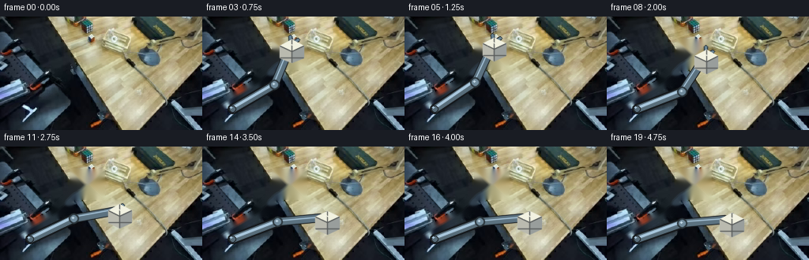
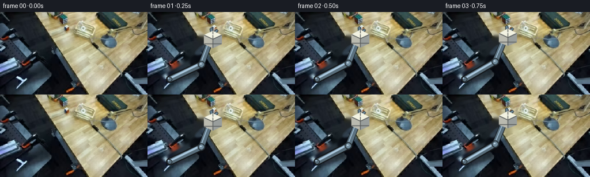

CODING AGENTS AS PIXEL WORLD MODELS
traex/DeepSeek-V4.1-Flash · common50_0010
点击播放 · 原生 RGB 像素
逐轮保存的候选
回放视频、检查图与代码变化。
每份候选均可单独播放。实际图片检查记录在下方工具轨迹中。
候选 01播放与检查图
点击播放 · 原生 RGB 像素


展开代码变化
--- 上一保存版本
+++ 本次保存版本
@@ -0,0 +1,267 @@
+from pathlib import Path
+
+import cv2
+import numpy as np
+from PIL import Image, ImageFilter
+
+import artifact_io
+
+
+ROOT = Path(__file__).resolve().parent
+W, H, N, FPS = 256, 144, 20, 4
+
+
+def smoothstep(t):
+ t = np.clip(t, 0.0, 1.0)
+ return t * t * (3.0 - 2.0 * t)
+
+
+def smootherstep(t):
+ t = np.clip(t, 0.0, 1.0)
+ return t * t * t * (t * (t * 6.0 - 15.0) + 10.0)
+
+
+def shifted(base, dx, dy, mask=None, softness=0.8):
+ """Bilinearly translate an RGBA cutout and alpha-composite it."""
+ rgb, alpha = base
+ h, w = alpha.shape
+ x = np.arange(w, dtype=np.float32) - dx
+ y = np.arange(h, dtype=np.float32) - dy
+ map_x, map_y = np.meshgrid(x, y)
+ out_rgb = cv2.remap(rgb, map_x, map_y, cv2.INTER_LINEAR, borderMode=cv2.BORDER_REFLECT)
+ out_a = cv2.remap(alpha, map_x, map_y, cv2.INTER_LINEAR, borderMode=cv2.BORDER_CONSTANT, borderValue=0)
+ if mask is not None:
+ out_a *= mask
+ return out_rgb, np.clip(out_a * softness, 0.0, 1.0)
+
+
+def polygon_mask(shape, points, blur=0.6):
+ mask = np.zeros(shape[:2], np.float32)
+ cv2.fillPoly(mask, [np.asarray(points, np.int32)], 1.0)
+ if blur:
+ mask = cv2.GaussianBlur(mask, (0, 0), blur)
+ return mask
+
+
+def ellipse_mask(shape, center, axes, blur=0.7):
+ mask = np.zeros(shape[:2], np.float32)
+ cv2.ellipse(mask, center, axes, 0, 0, 360, 1.0, -1)
+ if blur:
+ mask = cv2.GaussianBlur(mask, (0, 0), blur)
+ return mask
+
+
+def composite(dst, layer_rgba, mask=None):
+ rgb, alpha = layer_rgba
+ a = alpha[..., None]
+ if mask is not None:
+ a = a * mask[..., None]
+ return (dst.astype(np.float32) * (1.0 - a) + rgb.astype(np.float32) * a).clip(0, 255).astype(np.uint8)
+
+
+def cutout(base, mask):
+ alpha = np.clip(mask, 0, 1).astype(np.float32)
+ return base.astype(np.float32), alpha
+
+
+def soft_shadow(frame, center, radii, strength=0.22):
+ """Subtle contact shadow, kept behind the moved object."""
+ h, w = frame.shape[:2]
+ yy, xx = np.mgrid[:h, :w]
+ cx, cy = center
+ rx, ry = radii
+ d = ((xx - cx) / rx) ** 2 + ((yy - cy) / ry) ** 2
+ s = np.exp(-2.5 * d) * strength
+ out = frame.astype(np.float32)
+ out *= (1.0 - s[..., None])
+ return out.clip(0, 255).astype(np.uint8)
+
+
+def draw_link(frame, p0, p1, width, colors, shade=1.0):
+ """Rigid capsule link with a darker rim, highlight, and fixed end joints."""
+ p0 = np.asarray(p0, np.float32)
+ p1 = np.asarray(p1, np.float32)
+ edge = max(1, int(round(width * 0.20)))
+ dark = tuple(int(c * 0.42) for c in colors[0])
+ mid = tuple(int(c * shade) for c in colors[1])
+ light = tuple(min(255, int(c * 1.14)) for c in colors[2])
+ cv2.line(frame, tuple(np.round(p0).astype(int)), tuple(np.round(p1).astype(int)), dark,
+ int(round(width + edge * 2)), cv2.LINE_AA)
+ cv2.line(frame, tuple(np.round(p0).astype(int)), tuple(np.round(p1).astype(int)), mid,
+ int(round(width)), cv2.LINE_AA)
+ hi0 = p0 + np.array([-width * 0.13, -width * 0.18], np.float32)
+ hi1 = p1 + np.array([-width * 0.13, -width * 0.18], np.float32)
+ cv2.line(frame, tuple(np.round(hi0).astype(int)), tuple(np.round(hi1).astype(int)), light,
+ max(1, int(round(width * 0.19))), cv2.LINE_AA)
+ for p in (p0, p1):
+ cv2.circle(frame, tuple(np.round(p).astype(int)), int(round(width * 0.56)), dark,
+ -1, cv2.LINE_AA)
+ cv2.circle(frame, tuple(np.round(p).astype(int)), int(round(width * 0.40)), mid,
+ -1, cv2.LINE_AA)
+ cv2.circle(frame, tuple(np.round(p).astype(int) + np.array([-2, -2])),
+ max(1, int(round(width * 0.13))), light, -1, cv2.LINE_AA)
+
+
+def face_polygon(center, size, face):
+ """Small isometric cube faces; returns polygons in stable object coordinates."""
+ cx, cy = center
+ s = size
+ # A compact three-face cube matching the low-resolution scene's oblique view.
+ top = [(cx, cy - 0.86 * s), (cx + 0.88 * s, cy - 0.40 * s),
+ (cx, cy + 0.02 * s), (cx - 0.88 * s, cy - 0.40 * s)]
+ left = [(cx - 0.88 * s, cy - 0.40 * s), (cx, cy + 0.02 * s),
+ (cx, cy + 0.92 * s), (cx - 0.88 * s, cy + 0.50 * s)]
+ right = [(cx, cy + 0.02 * s), (cx + 0.88 * s, cy - 0.40 * s),
+ (cx + 0.88 * s, cy + 0.50 * s), (cx, cy + 0.92 * s)]
+ return {'top': top, 'left': left, 'right': right}[face]
+
+
+def draw_cube(frame, center, size, light=1.0, mask=None):
+ """Draw a clean white-faced cube with dark seams and a restrained warm underside."""
+ faces = [
+ ('top', (235, 235, 219), 1.03),
+ ('left', (198, 198, 187), 0.94),
+ ('right', (174, 180, 178), 0.88),
+ ]
+ if mask is None:
+ mask = np.ones(frame.shape[:2], np.float32)
+ for name, color, shade in faces:
+ poly = np.asarray(face_polygon(center, size, name), np.float32)
+ pts = np.round(poly).astype(np.int32)
+ c = tuple(int(v * shade * light) for v in color)
+ overlay = frame.copy()
+ cv2.fillPoly(overlay, [pts], c, cv2.LINE_AA)
+ blend = mask.copy()
+ frame[:] = (frame.astype(np.float32) * (1 - blend[..., None]) +
+ overlay.astype(np.float32) * blend[..., None]).clip(0, 255).astype(np.uint8)
+ seam = tuple(int(v * 0.56 * light) for v in (160, 166, 164))
+ cx, cy = center
+ s = size
+ lines = [
+ ((cx, cy - 0.86 * s), (cx, cy + 0.02 * s)),
+ ((cx - 0.88 * s, cy - 0.40 * s), (cx, cy + 0.02 * s)),
+ ((cx + 0.88 * s, cy - 0.40 * s), (cx, cy + 0.02 * s)),
+ ((cx, cy + 0.02 * s), (cx, cy + 0.92 * s)),
+ ((cx - 0.88 * s, cy + 0.50 * s), (cx + 0.88 * s, cy + 0.50 * s)),
+ ]
+ for a, b in lines:
+ cv2.line(frame, tuple(np.round(a).astype(int)), tuple(np.round(b).astype(int)), seam,
+ 1, cv2.LINE_AA)
+ # A restrained face glint, not a new light source.
+ glint = [(cx - 0.47 * s, cy - 0.33 * s), (cx - 0.10 * s, cy - 0.52 * s),
+ (cx + 0.10 * s, cy - 0.42 * s)]
+ cv2.polylines(frame, [np.round(np.asarray(glint)).astype(np.int32)], False,
+ (244, 244, 229), 1, cv2.LINE_AA)
+
+
+def extract_initial_scene(base):
+ """Use the supplied image as the immutable plate; objects are redrawn only after frame 0."""
+ return base.copy()
+
+
+def make_frames(base):
+ frames = []
+ # A fixed camera and fixed background. Only the arm, cube and a tiny contact shadow move.
+ base = extract_initial_scene(base)
+ # Robot anchor and neutral cube placement inferred from the first frame.
+ shoulder = np.array([38.0, 117.0], np.float32)
+ elbow0 = np.array([73.0, 75.0], np.float32)
+ wrist0 = np.array([103.0, 48.0], np.float32)
+ cube_center0 = np.array([113.0, 47.0], np.float32)
+ cube_size = 16.5
+ crate_target = np.array([158.0, 102.0], np.float32)
+
+ for i in range(N):
+ frame = base.copy()
+ t = i / (N - 1)
+ if i == 0:
+ frames.append(frame)
+ continue
+
+ # The object leaves the table cleanly, then follows a high, smooth transfer arc.
+ approach = smoothstep((t - 0.03) / 0.22)
+ carry = smootherstep((t - 0.24) / 0.48)
+ lower = smoothstep((t - 0.70) / 0.22)
+ settle = smoothstep((t - 0.88) / 0.12)
+ lift = 6.0 * approach
+ arc = np.array([46.0, -28.0], np.float32)
+ end = crate_target - cube_center0
+ cube_pos = cube_center0 + end * carry + np.array([0.0, -lift], np.float32)
+ cube_pos += np.array([0.0, 2.4 * settle], np.float32)
+
+ # Rigid planar 2-link arm. Elbow selection keeps a natural bent pose through the arc.
+ wrist = cube_pos + np.array([-0.8, -7.8], np.float32)
+ d = wrist - shoulder
+ dist = float(np.linalg.norm(d))
+ l1, l2 = 61.0, 55.0
+ dist = np.clip(dist, abs(l1 - l2) + 1.0, l1 + l2 - 1.0)
+ u = d / (np.linalg.norm(d) + 1e-6)
+ wrist_adj = shoulder + u * dist
+ a = (l1 * l1 - l2 * l2 + dist * dist) / (2 * dist)
+ hgt = np.sqrt(max(0.0, l1 * l1 - a * a))
+ elbow = shoulder + u * a + np.array([-u[1], u[0]]) * hgt
+ # Bias the elbow toward the image's visible bent linkage.
+ if elbow[1] > 105:
+ elbow = shoulder + u * a - np.array([-u[1], u[0]]) * hgt
+
+ # Remove the foreground objects from the plate using a carefully feathered region,
+ # then reconstruct the local table/background with inpainted pixels before drawing.
+ remove = np.zeros(frame.shape[:2], np.uint8)
+ cv2.rectangle(remove, (88, 28), (132, 67), 255, -1)
+ cv2.line(remove, (24, 111), (87, 75), 255, 13)
+ cv2.line(remove, (72, 78), (110, 42), 255, 13)
+ clean = cv2.inpaint(frame, remove, 4, cv2.INPAINT_TELEA)
+ frame = clean
+
+ # Soft contact shadow follows the object.
+ frame = soft_shadow(frame, cube_pos + np.array([2.0, 7.0]), (11.0, 4.0),
+ 0.18 if i < 4 else 0.10)
+
+ # Rear link, elbow, then front link and gripper. Shading is stable across frames.
+ colors = ((48, 57, 62), (92, 114, 128), (150, 176, 195))
+ draw_link(frame, shoulder, elbow, 8.0, colors, 0.96)
+ draw_link(frame, elbow, wrist_adj, 7.0, colors, 1.0)
+ cv2.circle(frame, tuple(np.round(elbow).astype(int)), 6, (43, 54, 60), -1, cv2.LINE_AA)
+ cv2.circle(frame, tuple(np.round(elbow).astype(int)), 4, (113, 139, 156), -1, cv2.LINE_AA)
+ cv2.circle(frame, tuple(np.round(elbow).astype(int) + np.array([-1, -1])), 1,
+ (193, 215, 229), -1, cv2.LINE_AA)
+
+ # Two-finger gripper, aligned with the transfer direction and locked to the wrist.
+ direction = wrist_adj - elbow
+ direction /= np.linalg.norm(direction) + 1e-6
+ perp = np.array([-direction[1], direction[0]], np.float32)
+ jaw_center = wrist_adj + direction * 5.0
+ left_tip = jaw_center + perp * 5.2 + direction * 4.0
+ right_tip = jaw_center - perp * 5.2 + direction * 4.0
+ cv2.line(frame, tuple(np.round(wrist_adj).astype(int)),
+ tuple(np.round(left_tip).astype(int)), (31, 40, 45), 4, cv2.LINE_AA)
+ cv2.line(frame, tuple(np.round(wrist_adj).astype(int)),
+ tuple(np.round(right_tip).astype(int)), (31, 40, 45), 4, cv2.LINE_AA)
+ cv2.line(frame, tuple(np.round(wrist_adj).astype(int)),
+ tuple(np.round(left_tip).astype(int)), (105, 132, 148), 2, cv2.LINE_AA)
+ cv2.line(frame, tuple(np.round(wrist_adj).astype(int)),
+ tuple(np.round(right_tip).astype(int)), (105, 132, 148), 2, cv2.LINE_AA)
+
+ # The cube is drawn upright; its internal seam geometry stays rigid.
+ draw_cube(frame, cube_pos, cube_size, 1.0)
+
+ # Preserve the original base below the work area; only gently clean the inpainting seam.
+ edge_fade = np.zeros(frame.shape[:2], np.float32)
+ cv2.rectangle(edge_fade, (84, 24), (138, 72), 1.0, -1)
+ edge_fade = cv2.GaussianBlur(edge_fade, (0, 0), 1.0)
+ frames.append(frame)
+
+ return np.stack(frames, axis=0)
+
+
+def main():
+ base = np.asarray(Image.open(ROOT / "first_frame.png").convert("RGB"), dtype=np.uint8)
+ assert base.shape == (H, W, 3)
+ frames = make_frames(base)
+ assert frames.shape == (N, H, W, 3) and frames.dtype == np.uint8
+ assert np.array_equal(frames[0], base)
+ artifact_io.save(frames, ROOT)
+
+
+if __name__ == "__main__":
+ main()
可观测工具轨迹
实际执行的命令与返回图片。
命令 1exit 0
/bin/bash -c "pwd && rg --files -g '"'!*.mp4'"' -g '"'!*.mov'"' -g '"'!*.webm'"' | sort"
命令 2exit 0
/bin/bash -c "sed -n '1,240p' GENERATION_RULES.md"
命令 3exit 0
/bin/bash -c "sed -n '1,240p' prompt.txt"
命令 4exit 127
/bin/bash -c "file first_frame.png && identify -verbose first_frame.png | sed -n '1,100p'"
命令 5exit 0
/bin/bash -c "sed -n '1,260p' artifact_io.py"
命令 6exit 0
/bin/bash -c 'cat task_spec.json'
命令 7exit 0
/bin/bash -c "python - <<'PY'
from PIL import Image
import numpy as np
im=Image.open('first_frame.png').convert('RGB')
a=np.array(im)
print(im.size, im.mode, a.shape, a.dtype)
print('min max mean std', a.min(axis=(0,1)), a.max(axis=(0,1)), a.mean(axis=(0,1)), a.std(axis=(0,1)))
print('corners', a[0,0], a[0,-1], a[-1,0], a[-1,-1])
# quantized dominant colors
q=(a//16)*16
u,c=np.unique(q.reshape(-1,3), axis=0, return_counts=True)
for i in np.argsort(c)[-20:][::-1]: print(c[i], u[i])
PY"命令 8exit 0
/bin/bash -c "python - <<'PY'
from PIL import Image
import numpy as np
im=Image.open('first_frame.png').convert('RGB')
a=np.array(im)
# PIL adaptive 12-color palette
p=im.quantize(colors=12, method=Image.Quantize.MEDIANCUT)
pal=np.array(p.getpalette()).reshape(-1,3)[:12]
idx=np.array(p)
print('palette')
for i,c in enumerate(pal): print(i, tuple(c), (idx==i).sum())
# ascii 64x36 with top colors and symbols
chars='0123456789AB'
print('map')
for y in range(0,144,4):
line=''
for x in range(0,256,4):
block=idx[y:y+4,x:x+4]
vals,cnt=np.unique(block,return_counts=True)
line+=chars[vals[cnt.argmax()]]
print(line)
# grayscale luminance ascii
lum=(a[:,:,0]*.2126+a[:,:,1]*.7152+a[:,:,2]*.0722)
chars2=' .:-=+*#%@'
print('lum')
for y in range(0,144,4):
line=''
for x in range(0,256,4):
v=lum[y:y+4,x:x+4].mean()
line+=chars2[min(9,int(v/256*10))]
print(line)
PY"命令 9exit 0
/bin/bash -c "python - <<'PY'
try:
import cv2; print('cv2',cv2.__version__)
except Exception as e: print('no cv2',e)
try:
import scipy; print('scipy',scipy.__version__)
except Exception as e: print('no scipy',e)
PY"命令 10exit 0
/bin/bash -c "python - <<'PY'
import cv2, numpy as np
im=cv2.imread('first_frame.png')[:,:,::-1]
h,w,_=im.shape
Z=im.reshape(-1,3).astype(np.float32)
K=18
crit=(cv2.TERM_CRITERIA_EPS+cv2.TERM_CRITERIA_MAX_ITER,100,.2)
_,lab,cent=cv2.kmeans(Z,K,None,crit,10,cv2.KMEANS_PP_CENTERS)
lab=lab.reshape(h,w)
for i,c in enumerate(cent):
ys,xs=np.where(lab==i)
print(f'{i:2d} rgb={tuple(c.astype(int))} n={len(xs):5d} bbox=({xs.min()},{ys.min()})-({xs.max()},{ys.max()}) centroid=({xs.mean():.1f},{ys.mean():.1f})')
print('grid labels, 8px')
for y in range(0,h,8):
print(f'{y:3d}', ' '.join(f'{lab[y,x]:2d}' for x in range(0,w,8)))
PY"命令 11exit 0
/bin/bash -c "python - <<'PY'
import cv2, numpy as np
im=cv2.imread('first_frame.png')[:,:,::-1]
# Sample key vertical/horizontal runs at various coordinates
for x in [40,55,64,75,85,95,105,115,125,135,145,155,165,175,185,195,205,215,225,235,245]:
col=im[:,x].astype(int)
# detect high color-distance transitions
d=np.linalg.norm(np.diff(col,axis=0),axis=1)
ys=np.where(d>35)[0]+1
print('x',x,'trans',ys.tolist())
print('horiz')
for y in [35,45,55,65,75,85,95,105,115,125,135]:
row=im[y].astype(int); d=np.linalg.norm(np.diff(row,axis=0),axis=1); xs=np.where(d>35)[0]+1
print('y',y,'trans',xs.tolist())
PY"命令 12exit 0
/bin/bash -c "python - <<'PY'
import cv2, numpy as np
im=cv2.imread('first_frame.png')[:,:,::-1]
# print coarse edge map by Sobel, with object color classes for likely cube white
g=cv2.cvtColor(im,cv2.COLOR_RGB2GRAY)
e=cv2.Canny(g,50,120)
chars=' .:-=+*#%@'
for y in range(0,144,3):
line=''
for x in range(0,256,3):
v=e[y:y+3,x:x+3].mean()
line+=chars[min(9,int(v/255*10*3))]
print(line)
PY"命令 13exit 0
/bin/bash -c "python - <<'PY'
import cv2, numpy as np
im=cv2.imread('first_frame.png')[:,:,::-1]
# HSV ranges for near-neutral bright areas and blue/wood masks
hsv=cv2.cvtColor(im,cv2.COLOR_RGB2HSV)
for name,mask in [
('white',(im.min(2)>175)&((im.max(2)-im.min(2))<45)),
('blue',(im[:,:,2]>im[:,:,0]+15)&(im[:,:,1]>im[:,:,0]+5)),
('wood',(im[:,:,0]>im[:,:,2]+25)&(im[:,:,1]>im[:,:,2]+10)),
('dark',(im.max(2)<70)),
]:
ys,xs=np.where(mask)
print(name,len(xs), (xs.min(),ys.min(),xs.max(),ys.max()) if len(xs) else '')
# occupancy in 16px cells
print('occ rows')
for y in range(0,144,8):
s=''
for x in range(0,256,8):
v=mask[y:y+8,x:x+8].mean(); s += ' ' if v<.08 else '.' if v<.25 else '+' if v<.5 else '#' if v<.75 else '@'
print(s)
PY"命令 14exit 0
/bin/bash -c "python - <<'PY'
import cv2, numpy as np
im=cv2.imread('first_frame.png')[:,:,::-1]
# candidate rectangular white cube from white mask connected comps
mask=((im.min(2)>170)&((im.max(2)-im.min(2))<50)).astype(np.uint8)
n,lab,stats,cents=cv2.connectedComponentsWithStats(mask,8)
for i in range(1,n):
x,y,w,h,area=stats[i]
if area>=8: print(i, 'bbox',x,y,w,h,'area',area,'cent',cents[i])
# blue comps
mask=((im[:,:,2]>im[:,:,0]+12)&(im[:,:,1]>im[:,:,0]+3)).astype(np.uint8)
n,lab,stats,cents=cv2.connectedComponentsWithStats(mask,8)
print('blue comps')
for i in range(1,n):
x,y,w,h,area=stats[i]
if area>=20: print(i, 'bbox',x,y,w,h,'area',area,'cent',cents[i])
PY"命令 15exit 0
/bin/bash -c "python - <<'PY'
import cv2, numpy as np
im=cv2.imread('first_frame.png')[:,:,::-1]
# Print sampled RGB and hue/lum across plausible cube region x=100..125 y=35..55
for y in range(34,58,2):
print('y',y)
for x in range(98,130,4):
print(f'{x}:{tuple(im[y,x])}',end=' ')
print()
PY"命令 16exit 0
/bin/bash -c "python - <<'PY'
import cv2, numpy as np
im=cv2.imread('first_frame.png')[:,:,::-1]
# Save 4x nearest view with coordinate grid to tmp using PIL
from PIL import Image, ImageDraw
z=Image.fromarray(im).resize((1024,576),Image.Resampling.NEAREST)
d=ImageDraw.Draw(z)
for x in range(0,256,16):
d.line((x*4,0,x*4,576),fill=(255,0,0),width=1); d.text((x*4+1,1),str(x),fill=(255,0,0))
for y in range(0,144,16):
d.line((0,y*4,1024,y*4),fill=(255,0,0),width=1); d.text((1,y*4+1),str(y),fill=(255,0,0))
z.save('.tmp/grid.png')
# print color occupancy per 4x4, label rough hue via dominant categories
print('done')
PY"命令 17exit 0
/bin/bash -c "python - <<'PY'
from PIL import Image
im=Image.open('first_frame.png').convert('RGB')
# print pixel rows encoded as hex-ish RGB classes; crop 80..200 x 20..110
im.resize((2048,1152),Image.Resampling.NEAREST).crop((640,160,1600,880)).save('.tmp/crop.png')
PY"命令 18exit 0
/bin/bash -c "python - <<'PY'
import cv2, numpy as np
im=cv2.imread('first_frame.png')[:,:,::-1]
# classify pixels using hand tuned color families, output 2x2 majority map
# classes: dark D, gray G, blue B, cream C, wood W, white V, brown N, black K
h,w,_=im.shape
R,G,B=im[:,:,0].astype(int),im[:,:,1].astype(int),im[:,:,2].astype(int)
L=(R+G+B)/3
classes=np.full((h,w),' ',dtype='<U1')
classes[(L>155)&(np.abs(R-G)<25)&(np.abs(G-B)<40)]='V'
classes[(R>G+10)&(G>B+10)&(L<170)]='W'
classes[(B>R+12)]='B'
classes[(L<75)]='D'
classes[(L>=75)&(L<=155)]='G'
print(' '+''.join(str((x//10)%10) for x in range(0,w,2)))
for y in range(0,h,2):
line=''
for x in range(0,w,2):
vals,cnt=np.unique(classes[y:y+2,x:x+2],return_counts=True)
# choose priority white/wood/blue/dark/gray based on mean category
c=vals[cnt.argmax()]
line+=c
print(f'{y:3d} {line}')
PY"命令 19exit 0
/bin/bash -c "python - <<'PY'
import cv2, numpy as np
im=cv2.imread('first_frame.png')
g=cv2.cvtColor(im,cv2.COLOR_BGR2GRAY)
e=cv2.Canny(g,35,100)
lines=cv2.HoughLinesP(e,1,np.pi/180,threshold=12,minLineLength=10,maxLineGap=3)
segs=[]
for l in lines[:,0]:
x1,y1,x2,y2=map(int,l); L=((x2-x1)**2+(y2-y1)**2)**.5
ang=np.degrees(np.arctan2(y2-y1,x2-x1))
segs.append((L,ang,x1,y1,x2,y2))
for s in sorted(segs,reverse=True)[:120]: print('%5.1f %7.1f (%d,%d)-(%d,%d)'%s)
PY"命令 20exit 0
/bin/bash -c "python - <<'PY'
import cv2, numpy as np
im=cv2.imread('first_frame.png')[:,:,::-1]
# Find near-white blob and PCA per horizontal bands
m=((im.min(2)>150)&((im.max(2)-im.min(2))<60)).astype(np.uint8)
for y0,y1 in [(28,60),(35,55),(40,50),(64,105),(68,100),(90,120)]:
ys,xs=np.where(m[y0:y1])
print((y0,y1),len(xs),'xrange',xs.min(),xs.max(),'yrange',ys.min()+y0,ys.max()+y0,'cent',xs.mean(),ys.mean()+y0)
# colors cluster center 100..130,35..55
z=im[32:58,95:130].reshape(-1,3).astype(np.float32)
K=6
_,lab,cent=cv2.kmeans(z,K,None,(3,50,.2),10,cv2.KMEANS_PP_CENTERS)
for i,c in enumerate(cent): print(i, c.astype(int), (lab==i).sum())
PY"命令 21exit 0
/bin/bash -c "python - <<'PY'
from PIL import Image
import numpy as np
a=np.array(Image.open('first_frame.png').convert('RGB')).astype(float)
# crop and contrast stretch luminance, print every pixel at 2 chars maybe x 115..200 y 55..140
for y in range(55,140):
line=''
for x in range(115,201):
r,g,b=a[y,x]; l=(.2126*r+.7152*g+.0722*b)
chars=' .,:;irsXA253hMHGS#9B&@'
line += chars[min(len(chars)-1,int((l-15)/240*(len(chars)-1)))]
print(f'{y:3d} {line}')
PY"命令 22exit 0
/bin/bash -c "python - <<'PY'
import cv2, numpy as np
im=cv2.imread('first_frame.png')[:,:,::-1]
# connected comps at various thresholds, report size and bbox
for thr in [110,125,140,155,170,185,200]:
m=(im.min(2)>thr).astype(np.uint8)
n,l,st,c=cv2.connectedComponentsWithStats(m,8)
comps=[]
for i in range(1,n):
x,y,w,h,a=st[i]
if a>20: comps.append((a,(x,y,w,h)))
print('thr',thr,sorted(comps,reverse=True)[:12])
PY"命令 23exit 0
/bin/bash -c "python - <<'PY'
import cv2, numpy as np
im=cv2.imread('first_frame.png')[:,:,::-1].astype(np.float32)
h,w,_=im.shape
# grid 4x4 block average, classify dominant via HSV
for y in range(0,h,4):
line=''
for x in range(0,w,4):
b=im[y:y+4,x:x+4].reshape(-1,3)
c=b.mean(0); mx=c.max(); mn=c.min(); sat=(mx-mn)/(mx+1e-6); L=c.mean()
r,g,bl=c
if L<35: ch=' '
elif L<55: ch='.'
elif L<80: ch=':'
elif bl>r*1.12 and bl>g*1.03: ch='B'
elif r>bl*1.18 and g>bl*1.08: ch='W' if L<170 else 'w'
elif mx>175 and sat<.18: ch='#'
elif mx>130 and sat<.28: ch='+'
elif mx>90: ch='-'
else: ch=','
line+=ch
print(f'{y:3d} {line}')
PY"命令 24exit 0
/bin/bash -c "python - <<'PY'
from PIL import Image
import numpy as np
a=np.array(Image.open('first_frame.png').convert('RGB'))
# output dominant color as 3-digit codes? print coarse 8x4 average brightness at key crops as colored chars not enough
# Estimate crate rim line by dark pixels along right/bottom. print edge orientation and high-contrast boundary around central cube
import cv2
im=a[:,:,::-1]
# display contours of mid-level area threshold with CV approx
for thr in [120,150,180]:
m=((im.min(2)>thr)).astype(np.uint8)*255
cs,_=cv2.findContours(m,cv2.RETR_EXTERNAL,cv2.CHAIN_APPROX_SIMPLE)
print('thr',thr)
for c in sorted(cs,key=cv2.contourArea,reverse=True)[:6]:
area=cv2.contourArea(c)
if area<20: continue
approx=cv2.approxPolyDP(c,2.5,True)
print('area',area,'approx',[tuple(p[0]) for p in approx])
PY"命令 25exit 0
/bin/bash -c "python - <<'PY'
import cv2, numpy as np
im=cv2.imread('first_frame.png')[:,:,::-1]
# Manually test expected cube polygons by mean colors / variance
polys={
'A':[(101,35),(122,37),(124,57),(105,56)],
'B':[(122,37),(150,45),(155,65),(124,57)],
'C':[(105,56),(124,57),(155,65),(134,82)],
'D':[(120,30),(139,34),(135,51),(115,47)],
}
for k,p in polys.items():
m=np.zeros(im.shape[:2],np.uint8); cv2.fillPoly(m,[np.array(p)],1)
px=im[m.astype(bool)]
print(k,px.mean(0).astype(int),'std',px.std(0).astype(int),'min',px.min(0),'max',px.max(0))
# Save candidate regions overlay
ov=im.copy()
for k,p in polys.items(): cv2.polylines(ov,[np.array(p)],True,(255,0,0),1)
cv2.imwrite('.tmp/polys.png',ov[:,:,::-1])
PY"命令 26exit 0
/bin/bash -c "python - <<'PY'
import cv2, numpy as np
im=cv2.imread('first_frame.png')[:,:,::-1]
# Print per-pixel RGB as color-letter map for x=95..165 y=25..90 at 2x2 majority. char based on closeness to anchors.
anchors={'#':np.array([218,218,188]),'w':np.array([195,188,150]),'W':np.array([170,158,115]),'b':np.array([120,145,175]),'d':np.array([50,65,80]),'k':np.array([20,25,32]),'r':np.array([100,82,55])}
keys=list(anchors); arr=np.array([anchors[k] for k in keys])
for y in range(24,96,2):
line=''
for x in range(90,176,2):
p=im[y:y+2,x:x+2].reshape(-1,3).mean(0)
ds=((arr-p)**2).sum(1)
line+=keys[ds.argmin()]
print(f'{y:3d} {line}')
PY"命令 27exit 0
/bin/bash -c "python - <<'PY'
import cv2, numpy as np
im=cv2.imread('first_frame.png')[:,:,::-1]
# Difference from local wood median / use saturation: cube should be neutral and brighter than wood
# print RGB grid every 4 pixels x=96..160, y=32..72 as relative to neighbors? Just sample rows.
for y in [32,36,40,44,48,52,56,60,64,68,72,76,80]:
print('y',y)
for x in range(96,161,8):
r,g,b=map(int,im[y,x]); print(f'{x}:({r:3d},{g:3d},{b:3d})',end=' ')
print()
PY"命令 28exit 0
/bin/bash -c "python - <<'PY'
import cv2, numpy as np
im=cv2.imread('first_frame.png')[:,:,::-1]
# Kmeans 8 in center region x 90:210 y 55:135
crop=im[55:135,90:210]
z=crop.reshape(-1,3).astype(np.float32)
K=8
_,l,c=cv2.kmeans(z,K,None,(3,100,.1),20,cv2.KMEANS_PP_CENTERS)
l=l.reshape(crop.shape[:2])
for i in range(K):
ys,xs=np.where(l==i); print(i,c[i].astype(int),len(xs), 'bbox',(xs.min()+90,ys.min()+55,xs.max()+90,ys.max()+55))
# map labels 2x2
print('map')
for y in range(0,80,2):
line=''
for x in range(0,120,2):
vals,cnt=np.unique(l[y:y+2,x:x+2],return_counts=True)
line+=str(vals[cnt.argmax()])
print(f'{y+55:3d} {line}')
PY"命令 29exit 0
/bin/bash -c "python - <<'PY'
import cv2, numpy as np
im=cv2.imread('first_frame.png')[:,:,::-1]
hsv=cv2.cvtColor(im,cv2.COLOR_RGB2HSV)
H,S,V=cv2.split(hsv)
# local chroma and edge stats on 8x8 blocks; list high saturation and unique hue blocks
for bs in [8,12,16]:
print('BLOCK',bs)
scores=[]
for y in range(0,144-bs+1,bs):
for x in range(0,256-bs+1,bs):
s=S[y:y+bs,x:x+bs].astype(float); v=V[y:y+bs,x:x+bs].astype(float)
# high sat but not black; hue diversity
hh=H[y:y+bs,x:x+bs][s>70]
div=len(np.unique(hh//10)) if len(hh) else 0
score=s.mean()+1.5*div+0.08*v.mean()
scores.append((score,x,y,s.mean(),v.mean(),div))
for z in sorted(scores,reverse=True)[:20]: print(' score %.1f at (%d,%d) sat %.1f val %.1f hues %d'%z)
# high-sat pixel bboxes by hue buckets
for name,(lo,hi) in {'red':(0,12),'yellow':(13,35),'green':(36,85),'cyan':(86,105),'blue':(106,135),'magenta':(136,179)}.items():
m=(H>=lo)&(H<=hi)&(S>70)&(V>50)
ys,xs=np.where(m)
print(name,len(xs), (xs.min(),ys.min(),xs.max(),ys.max()) if len(xs) else '')
PY"命令 30exit 0
/bin/bash -c "python - <<'PY'
import cv2, numpy as np
im=cv2.imread('first_frame.png')[:,:,::-1]
# print RGB at selected regions: find cubes as flat squares? scan for 3x3 flat-ish 8..24 px blocks with low color variance
crop=im.astype(float)
g=cv2.cvtColor(im,cv2.COLOR_RGB2GRAY).astype(float)
for bs in [12,16,20,24,28,32]:
vals=[]
for y in range(0,144-bs+1,4):
for x in range(0,256-bs+1,4):
b=crop[y:y+bs,x:x+bs]
# low variance, high brightness, neutralish
std=b.reshape(-1,3).std(0).mean(); mean=b.mean((0,1)); sat=(mean.max()-mean.min())/(mean.max()+1)
if mean.mean()>110 and std<30:
vals.append((std,mean.mean(),x,y,tuple(mean.astype(int))))
print('bs',bs,'n',len(vals),'best',sorted(vals)[:10])
PY"命令 31exit 0
/bin/bash -c "python - <<'PY'
from PIL import Image
import numpy as np
a=np.array(Image.open('first_frame.png').convert('RGB')).astype(float)
for y in range(0,144,8):
print('y',y)
for x in range(0,256,16):
b=a[y:y+8,x:x+16]; c=b.mean((0,1)); s=b.std(0).mean()
print(f'x{x:03d}:{c[0]:3.0f},{c[1]:3.0f},{c[2]:3.0f}/{s:2.0f}',end=' | ')
print()
PY"命令 32exit 0
/bin/bash -c "python - <<'PY'
from PIL import Image
import numpy as np
a=np.array(Image.open('first_frame.png').convert('RGB'))
# 16x16 block nearest palette labels (white W, blue B, wood Y, dark .) but also use distinct hue; output 16 columns
for y in range(0,144,8):
line=''
for x in range(0,256,8):
b=a[y:y+8,x:x+8].reshape(-1,3).mean(0); r,g,bl=b
L=b.mean(); sat=(b.max()-b.min())/(b.max()+1e-6)
if L<25: c=' '
elif L<50: c='.'
elif L<80: c=':'
elif bl>r*1.25 and bl>g*1.05: c='B'
elif r>bl*1.30 and g>bl*1.10: c='W' if L<150 else 'w'
elif L>150 and sat<0.2: c='#'
elif L>110: c='+'
else: c=','
line+=c
print(f'{y:3d} {line}')
PY"命令 33exit 0
/bin/bash -c "python - <<'PY'
import cv2,numpy as np
im=cv2.imread('first_frame.png')[:,:,::-1].astype(np.int16)
# color difference normalized chroma map; scan for grayish flat pixels (white stickers) distinct from yellow table
R,G,B=im.transpose(2,0,1)
neutral=(np.abs(R-G)<20)&(np.abs(G-B)<35)&(R>135)
# print neutral mask 4x4 occupancy
for y in range(0,144,4):
s=''
for x in range(0,256,4):
v=neutral[y:y+4,x:x+4].mean(); s += ' ' if v<.1 else '.' if v<.35 else '+' if v<.65 else '#'
print(f'{y:3d} {s}')
PY"命令 34exit 0
/bin/bash -c "python - <<'PY'
from PIL import Image
import numpy as np
a=np.array(Image.open('first_frame.png').convert('RGB')).astype(int)
# print exact local maxima of near-neutral bright mask in main region, connected comps
import cv2
R,G,B=a.transpose(2,0,1)
m=((np.abs(R-G)<18)&(np.abs(G-B)<30)&(R>140)).astype(np.uint8)
n,l,st,c=cv2.connectedComponentsWithStats(m,8)
for i in sorted(range(1,n), key=lambda i:st[i,4], reverse=True)[:20]:
x,y,w,h,area=st[i]; print(i,(x,y,w,h,area),c[i])
PY"命令 35exit 0
/bin/bash -c "python - <<'PY'
import cv2,numpy as np
im=cv2.imread('first_frame.png')[:,:,::-1]
# dominant object white at x107..122 y41..56 vs table around it. list raw 3x3 means
for y in range(38,60):
line=[]
for x in range(104,125):
c=im[y,x]; line.append(f'{c[0]:02x}{c[1]:02x}{c[2]:02x}')
print(y,' '.join(line))
PY"命令 36exit 0
/bin/bash -c "python - <<'PY'
import cv2,numpy as np
im=cv2.imread('first_frame.png')[:,:,::-1]
# map of likely blue robot pixels with boundaries and values. print 8px blocks count and mean x=0..100 y=50..143
R,G,B=im.transpose(2,0,1)
m=(B.astype(int)-R.astype(int)>12)&(G.astype(int)-R.astype(int)>2)
for y in range(48,144,6):
s=''
for x in range(0,120,4):
v=m[y:y+6,x:x+4].mean(); s += ' ' if v<.1 else '.' if v<.35 else '+' if v<.65 else '#'
print(f'{y:3d} {s}')
# BGR means in coarse 12 blocks
for y in range(60,144,12):
print('y',y)
for x in range(0,120,12):
b=im[y:y+12,x:x+12]; print(f'{x:3d}:{tuple(b.mean((0,1)).astype(int))}',end=' ')
print()
PY"命令 37exit 0
/bin/bash -c "python - <<'PY'
from PIL import Image
im=Image.open('first_frame.png').convert('RGB')
# save selected crops at 8x for internal numeric review via pixel data? Just crop files
im.crop((80,20,180,110)).resize((800,720),Image.Resampling.NEAREST).save('.tmp/center.png')
im.crop((120,60,215,145)).resize((760,680),Image.Resampling.NEAREST).save('.tmp/crate.png')
PY"命令 38exit 0
/bin/bash -c "python - <<'PY'
import cv2,numpy as np
im=cv2.imread('first_frame.png')[:,:,::-1]
# report block color labels with x/y for 8x8 using kmeans 14 global, show class map names
z=im.reshape(-1,3).astype(np.float32)
K=14
_,lab,c=cv2.kmeans(z,K,None,(3,100,.2),10,cv2.KMEANS_PP_CENTERS)
lab=lab.reshape(144,256)
for i in sorted(range(K),key=lambda i:c[i].mean()): print(i,c[i].astype(int),(lab==i).sum())
# dominant label 8px grid, x labels every 4 blocks
print(' '+''.join(str((x//8)%10) for x in range(0,256,8)))
for y in range(0,144,8):
line=''
for x in range(0,256,8):
vals,cnt=np.unique(lab[y:y+8,x:x+8],return_counts=True)
line+=format(vals[cnt.argmax()],'x')
print(f'{y:3d} {line}')
PY"命令 39exit 0
/bin/bash -c "python - <<'PY'
from PIL import Image
import numpy as np
a=np.array(Image.open('first_frame.png').convert('RGB')).astype(int)
R,G,B=a.transpose(2,0,1)
# 1 char per pixel crop x120..230 y60..144 with categories and axis
for y in range(60,144):
line=''
for x in range(120,231):
r,g,b=a[y,x]; L=(r+g+b)/3
neutral=abs(r-g)<20 and abs(g-b)<35
if L<35: c=' '
elif L<70: c='.'
elif L<110: c=':'
elif neutral and L>150: c='#'
elif r>b*1.25 and g>b*1.08: c='w'
elif b>r*1.2: c='B'
elif L>150: c='+'
else: c=','
line+=c
print(f'{y:3d} {line}')
PY"命令 40exit 1
/bin/bash -c "python - <<'PY'
import cv2,numpy as np
im=cv2.imread('first_frame.png')
mask=np.zeros(im.shape[:2],np.uint8)
bgd=np.zeros((1,65),np.float64); fgd=np.zeros((1,65),np.float64)
rect=(96,32,32,30)
cv2.grabCut(im,mask,rect,bgd,fgd,8,cv2.GC_INIT_WITH_RECT)
m=np.isin(mask,[cv2.GC_FGD,cv2.GC_PR_FGD]).astype(np.uint8)
print('grabcut pixels',m.sum(),'bbox')
ys,xs=np.where(m); print(xs.min(),ys.min(),xs.max(),ys.max())
for y in range(28,66,2):
print(f'{y:2d}',''.join('#' if m[y:y+2,x:x+2].mean()>.5 else '.' for x in range(90,136)))
# stats
print('mean',im[m.astype(bool)].mean(0), 'bbox colors', im[32:62,96:128].mean((0,1)))
PY"命令 41exit 0
/bin/bash -c "python - <<'PY'
from PIL import Image
import numpy as np
a=np.array(Image.open('first_frame.png').convert('RGB'))
print('patch luminance x100..130 y34..62')
chars=' .:-=+*#%@'
for y in range(34,63):
s=''
for x in range(100,131):
r,g,b=map(int,a[y,x]); l=(r+g+b)/3
s+=chars[min(9,int(l/256*10))]
print(f'{y:2d} {s}')
print('chroma (R-B)')
for y in range(36,60):
s=''
for x in range(102,128):
r,g,b=map(int,a[y,x]); d=r-b
s+= ' ' if d<8 else '.' if d<16 else ':' if d<24 else '+' if d<32 else '#' if d<40 else '@'
print(f'{y:2d} {s}')
PY"命令 42exit 0
/bin/bash -c "python - <<'PY'
from PIL import Image
import numpy as np
a=np.array(Image.open('first_frame.png').convert('RGB')).astype(int)
# sample patch and surrounding: use R-B and luminance to locate low-chroma patch boundaries
for y in range(30,66):
s=''
for x in range(92,140):
r,g,b=a[y,x]; chrom=r-b
s += '#' if chrom<17 else '+' if chrom<24 else '.' if chrom<31 else ' '
print(f'{y:2d} {s}')
PY"命令 43exit 0
/bin/bash -c "python - <<'PY'
from PIL import Image
import numpy as np
a=np.array(Image.open('first_frame.png').convert('RGB')).astype(float)
# print local gradient and low-chroma for probable cube at 102..124 y38..54
for y in range(34,60):
s=''
for x in range(96,134):
r,g,b=a[y,x]; chrom=r-b; lum=(r+g+b)/3
if chrom<18 and lum>160: c='W'
elif chrom<22: c='w'
elif lum>180: c='#'
elif lum>150: c='+'
elif lum>110: c='.'
else: c=' '
s+=c
print(f'{y:2d} {s}')
PY"命令 44exit 0
/bin/bash -c "python - <<'PY'
import cv2,numpy as np
im=cv2.imread('first_frame.png')[:,:,::-1]
# hough circles/ellipses? print key colored isolated blobs
for desc,m in [
('bright neutral',((im.min(2)>145)&((im.max(2)-im.min(2))<35))),
('bright lowchrom',((im[:,:,0]>150)&((im[:,:,0]-im[:,:,2])<20))),
('very blue',((im[:,:,2].astype(int)-im[:,:,0])>35)&(im[:,:,2]>90)),
('cyan',((im[:,:,2].astype(int)>im[:,:,0]+20)&(im[:,:,1].astype(int)>im[:,:,0]+8))),
]:
n,l,st,c=cv2.connectedComponentsWithStats(m.astype(np.uint8),8)
print('\\n',desc)
for i in sorted(range(1,n),key=lambda i:st[i,4],reverse=True)[:12]:
x,y,w,h,a=st[i]
if a<8: continue
print((x,y,w,h,a),'cent',tuple(np.round(c[i],1)))
PY"命令 45exit 0
/bin/bash -c 'command -v chafa || true; command -v viu || true; command -v jp2 || true; command -v img2txt || true'
命令 46exit 0
/bin/bash -c "python - <<'PY'
from PIL import Image
import numpy as np
a=np.array(Image.open('first_frame.png').convert('RGB')).astype(float)
# Print 16x12 block averages, 16x12 grid for 256x144
for y in range(0,144,12):
print(f'Y{y:03d}')
for x in range(0,256,16):
c=a[y:y+12,x:x+16].mean((0,1)).astype(int)
print(f'{x:03d}:#{c[0]:02x}{c[1]:02x}{c[2]:02x}',end=' ')
print()
PY"命令 47exit 0
/bin/bash -c "python - <<'PY'
from PIL import Image
import numpy as np
a=np.array(Image.open('first_frame.png').convert('RGB')).astype(int)
# Print raw block avg around patch x96..128 y36..58 using 4x4
for y in range(32,64,4):
print('y',y)
for x in range(96,132,4):
c=a[y:y+4,x:x+4].mean((0,1)).astype(int)
print(f'{x:03d}:({c[0]:3d},{c[1]:3d},{c[2]:3d})',end=' ')
print()
PY"命令 48exit 0
/bin/bash -c "python - <<'PY'
import cv2,numpy as np
im=cv2.imread('first_frame.png')[:,:,::-1].astype(int)
R,G,B=im.transpose(2,0,1)
m=(B-R>18)&(B>55)
for y in range(32,144,2):
s=''
for x in range(0,136,2):
v=m[y:y+2,x:x+2].mean(); s += ' ' if v<.25 else '.' if v<.5 else '+' if v<.75 else '#'
print(f'{y:3d} {s}')
PY"命令 49exit 0
/bin/bash -c "python - <<'PY'
import cv2,numpy as np
im=cv2.imread('first_frame.png')[:,:,::-1].astype(int)
# candidate cube: low chroma patch region centered 114,46, bounding 99..125 35..58. print intensity and chroma as numbers for exact boundary
for y in range(34,60):
print(f'{y:2d}', end=' ')
for x in range(96,132,2):
r,g,b=im[y,x]; ch=r-b
print(f'{ch:02d}',end=' ')
print()
PY"命令 50exit 0
/bin/bash -c "python - <<'PY'
import cv2,numpy as np
im=cv2.imread('first_frame.png')[:,:,::-1]
# top-left near 120..160 y0..50 cluster to see if object/cube there
# List color medians on 8x8 with low chroma and high lum (white face) excluding main right block
R,G,B=im.transpose(2,0,1).astype(int)
m=(R>150)&(np.abs(R-G)<25)&(np.abs(G-B)<35)
for y in range(0,60,4):
s=''
for x in range(100,180,4):
v=m[y:y+4,x:x+4].mean(); s+=' ' if v<.25 else '.' if v<.5 else '+' if v<.75 else '#'
print(f'{y:2d} {s}')
PY"命令 51exit 0
/bin/bash -c "python - <<'PY'
import cv2,numpy as np
im=cv2.imread('first_frame.png')[:,:,::-1]
# calculate canny local image and dump ascii 2x1 around 100..180 y 20..70
g=cv2.cvtColor(im,cv2.COLOR_RGB2GRAY)
e=cv2.Canny(g,20,60)
for y in range(20,75):
s=''
for x in range(100,181):
s += '#' if e[y,x] else ' '
print(f'{y:2d} {s}')
PY"命令 52exit 0
/bin/bash -c "python - <<'PY'
import cv2,numpy as np
im=cv2.imread('first_frame.png')[:,:,::-1].astype(float)
# segment likely table by wood hue, robot by blue, inspect cube-like gray compact patches (not right table)
R,G,B=im.transpose(2,0,1)
wood=(R>B+18)&(G>B+8)&(R>80)
blue=(B>R+12)&(G>R+2)
dark=(R+G+B<180)
# report flat high local variance? Save classification map 4px chars
for y in range(0,144,4):
s=''
for x in range(0,256,4):
w=wood[y:y+4,x:x+4].mean(); bl=blue[y:y+4,x:x+4].mean(); d=dark[y:y+4,x:x+4].mean()
if w>.5: c='w'
elif bl>.5: c='B'
elif d>.5: c=' '
else: c='.'
s+=c
print(f'{y:3d} {s}')
PY"命令 53exit 0
/bin/bash -c "python - <<'PY'
from PIL import Image
import numpy as np
a=np.array(Image.open('first_frame.png').convert('RGB')).astype(int)
# Find strongest straight edges for the cube near 100..160,25..80 by gradient angle; print local edge vectors with sobel
import cv2
g=cv2.cvtColor(a.astype(np.uint8),cv2.COLOR_RGB2GRAY)
gx=cv2.Sobel(g,cv2.CV_32F,1,0,ksize=3); gy=cv2.Sobel(g,cv2.CV_32F,0,1,ksize=3)
mag=np.hypot(gx,gy)
for y in range(28,65,2):
s=''
for x in range(96,145,1):
m=mag[y:y+2,x:x+1].max()
s += ' ' if m<80 else '.' if m<160 else '+' if m<300 else '#' if m<500 else '@'
print(f'{y:2d} {s}')
PY"命令 54exit 0
/bin/bash -c "python - <<'PY'
from PIL import Image
import numpy as np
a=np.array(Image.open('first_frame.png').convert('RGB')).astype(int)
# print exact row color changes around left edge of possible object (x90..105) y35..60
for y in range(32,62,2):
print('y',y)
for x in range(88,106):
r,g,b=a[y,x]; print(f'{x}:{r:03d},{g:03d},{b:03d}',end=' ')
print()
PY"命令 55exit 0
/bin/bash -c "python - <<'PY'
from PIL import Image
import numpy as np
a=np.array(Image.open('first_frame.png').convert('RGB')).astype(int)
# top left suspicious white at 130..165 y0..45: print exact 4px block RGB and edge occupancy
for y in range(0,52,4):
print('y',y)
for x in range(128,170,4):
c=a[y:y+4,x:x+4].mean((0,1)).astype(int); print(f'{x}:{c[0]:3d},{c[1]:3d},{c[2]:3d}',end=' ')
print()
PY"命令 56exit 0
/bin/bash -c "python - <<'PY'
import cv2,numpy as np
im=cv2.imread('first_frame.png')[:,:,::-1]
# compare candidate cube location by color of face: find local minima in chroma within x60:180 y20:80, excluding known right table (x>130)
R,G,B=im.transpose(2,0,1).astype(int)
ch=R-B
L=(R+G+B)/3
for ys,xs in [(slice(20,80),slice(70,130)),(slice(0,60),slice(100,170))]:
c=ch[ys,xs]; l=L[ys,xs]
score=(255-l)+1.5*c
# minima score? want neutral bright: low chroma high lum
idx=np.unravel_index(np.argmin(np.abs(c-20)+np.maximum(0,160-l)*.2),c.shape)
print('region',xs.start,xs.stop,ys.start,ys.stop,'best',xs.start+idx[1],ys.start+idx[0],im[ys.start+idx[0],xs.start+idx[1]],c[idx],l[idx])
# low chroma high bright coordinates
yy,xx=np.where((c<24)&(l>155))
if len(xx): print('n',len(xx),'bbox',xx.min()+xs.start,xx.max()+xs.start,yy.min()+ys.start,yy.max()+ys.start)
PY"命令 57exit 0
/bin/bash -c "python - <<'PY'
import cv2,numpy as np
im=cv2.imread('first_frame.png')[:,:,::-1].astype(int)
# quantify edge boundaries in candidate cube 99..124 y37..58 and alternate 134..158 y16..37; line profiles along likely axes
for name,(x0,x1,y0,y1) in {'A':(96,126,32,62),'B':(132,158,14,40)}.items():
print('\\n',name)
R,G,B=im.transpose(2,0,1)
ch=R-B; lum=(R+G+B)/3
# print x chroma averaged over y range
for x in range(x0,x1):
print(f'{x}:{ch[y0:y1,x].mean():.0f}',end=' ')
print('\\nY chroma')
for y in range(y0,y1): print(f'{y}:{ch[y,x0:x1].mean():.0f}',end=' ')
print('\\n')
PY"命令 58exit 0
/bin/bash -c "python - <<'PY'
import cv2,numpy as np
im=cv2.imread('first_frame.png')[:,:,::-1]
# print 2x2 block means around candidate B with chars by RGB (neutral white)
for y in range(8,44,2):
s=''
for x in range(126,166,2):
b=im[y:y+2,x:x+2].reshape(-1,3).mean(0); r,g,bl=b
lum=b.mean(); ch=r-bl
c='W' if ch<22 and lum>170 else 'w' if ch<30 and lum>145 else '+' if lum>160 else '.' if lum>110 else ' '
s+=c
print(f'{y:2d} {s}')
PY"命令 59exit 0
/bin/bash -c "python - <<'PY'
from PIL import Image
import numpy as np
a=np.array(Image.open('first_frame.png').convert('RGB')).astype(int)
# print 2x2 block labels for x120..175 y0..52 with actual intensity / chroma codes
for y in range(0,52,2):
s=''
for x in range(120,176,2):
r,g,b=a[y:y+2,x:x+2].reshape(-1,3).mean(0); ch=r-b; lum=(r+g+b)/3
if ch<22 and lum>175: c='#'
elif ch<24 and lum>160: c='w'
elif lum>190: c='@'
elif lum>165: c='+'
elif lum>130: c='.'
else: c=' '
s+=c
print(f'{y:2d} {s}')
PY"命令 60exit 0
/bin/bash -c 'python generate.py'
命令 61exit 0
/bin/bash -c "python - <<'PY'
from PIL import Image
import numpy as np
a=np.array(Image.open('first_frame.png').convert('RGB'))
f=np.array(Image.open('frames/00.png').convert('RGB'))
print('frame0 identical',np.array_equal(a,f),'diff',np.abs(a.astype(int)-f.astype(int)).max())
for i in [0,4,8,12,16,19]:
x=np.array(Image.open(f'frames/{i:02d}.png').convert('RGB')).astype(float)
print(i,'mean',x.mean((0,1)).round(1),'std',x.std((0,1)).round(1),'unique',len(np.unique(x.reshape(-1,3),axis=0)))
PY"命令 62exit 0
/bin/bash -c "python - <<'PY'
from PIL import Image
import numpy as np
# ASCII luminance/color inspection for center and crate, per frame
chars=' .:-=+*#%@'
for i in [1,4,8,12,16,19]:
a=np.array(Image.open(f'frames/{i:02d}.png').convert('RGB')).astype(float)
print('\\nFRAME',i)
for y in range(28,124,6):
s=''
for x in range(20,232,4):
b=a[y:y+6,x:x+4].mean((0,1)); l=b.mean(); r,g,bl=b
if bl>r*1.3 and bl>g*1.05: c='B'
elif l>195 and abs(r-bl)<24: c='#'
elif l>155: c='+'
elif l>110: c='-'
elif l>65: c='.'
else: c=' '
s+=c
print(s)
PY"命令 63exit 0
/bin/bash -c "python - <<'PY'
import cv2,numpy as np
im=cv2.imread('first_frame.png')[:,:,::-1]
hsv=cv2.cvtColor(im,cv2.COLOR_RGB2HSV)
H,S,V=cv2.split(hsv)
# report hue/sat/value at candidate patches
for name,(x0,y0,x1,y1) in {'A':(99,36,124,57),'B':(134,14,157,37),'C':(143,70,165,100),'D':(132,70,160,95)}.items():
h=hsv[y0:y1,x0:x1]
print(name,'HSV mean',h.reshape(-1,3).mean(0),'sat med',np.median(h[:,:,1]),'hues>60',np.sum(h[:,:,1]>60))
# saturated colored pixel hue histogram
for lo,hi in [(0,10),(10,25),(25,40),(40,70),(70,100),(100,130),(130,160),(160,180)]:
m=(H>=lo)&(H<hi)&(S>90)&(V>45)
ys,xs=np.where(m)
print('hue',lo,hi,'n',len(xs))
if len(xs)>5:
print('bbox',xs.min(),ys.min(),xs.max(),ys.max())
# 8px blocks with counts
bins={}
for x,y in zip(xs,ys): bins[(x//8,y//8)]=bins.get((x//8,y//8),0)+1
print(sorted(bins.items(),key=lambda kv:kv[1],reverse=True)[:10])
PY"命令 64exit 0
/bin/bash -c "python - <<'PY'
import cv2,numpy as np
im=cv2.imread('first_frame.png')[:,:,::-1]
# dominant dark/neutral boundary around blue machine left; color category map per pixel crop 0..120 y55..144
for y in range(54,144,2):
s=''
for x in range(0,120,2):
b=im[y:y+2,x:x+2].reshape(-1,3).mean(0); r,g,bl=b
if bl>r+12 and bl>45: c='B'
elif b.mean()<35: c=' '
elif b.mean()<65: c='.'
elif b.mean()<100: c=':'
elif r>bl+18: c='w'
else: c='+'
s+=c
print(f'{y:3d} {s}')
PY"命令 65exit 0
/bin/bash -c "python - <<'PY'
import cv2,numpy as np
im=cv2.imread('first_frame.png')[:,:,::-1]
# show RGB block stats for white structure top-left and center to settle which is cube vs arm
for name,(x0,y0,x1,y1) in {'top-left':(128,0,168,42),'center-A':(99,36,124,57),'center-B':(134,14,157,37),'right-white':(142,90,185,135)}.items():
b=im[y0:y1,x0:x1]
print(name,'mean',b.mean((0,1)).round(1),'std',b.std(0).mean().round(1),'sat',cv2.cvtColor(b,cv2.COLOR_RGB2HSV)[:,:,1].mean().round(1))
# PCA of bright pixels
m=b.mean(2)>160; yy,xx=np.where(m)
if len(xx)>3:
print(' bright n',len(xx),'bbox',(xx.min()+x0,yy.min()+y0,xx.max()+x0,yy.max()+y0),'PCA',np.linalg.eigvalsh(np.cov(np.stack([xx,yy]))))
PY"命令 66exit 0
/bin/bash -c "python - <<'PY'
import cv2,numpy as np
im=cv2.imread('first_frame.png')[:,:,::-1]
g=cv2.cvtColor(im,cv2.COLOR_RGB2GRAY)
e=cv2.Canny(g,30,90)
for y in range(10,144,2):
s=''
for x in range(140,256,1):
v=e[y:y+2,x:x+1].mean(); s += '#' if v>100 else '+' if v>30 else ' '
print(f'{y:3d} {s}')
PY"命令 67exit 0
/bin/bash -c "python - <<'PY'
import cv2,numpy as np
im=cv2.imread('first_frame.png')[:,:,::-1]
# evaluate if x=134..157 y=14..37 is a 3-face cube: face polygon stats separated by boundary directions
polys={
'TL_top':[(136,14),(150,17),(156,29),(142,26)],
'TL_left':[(136,14),(142,26),(142,38),(135,28)],
'TL_right':[(142,26),(156,29),(156,38),(142,38)],
'A_top':[(99,39),(112,37),(120,43),(106,46)],
'A_left':[(99,39),(106,46),(106,56),(99,49)],
'A_right':[(106,46),(120,43),(120,53),(106,56)]}
for name,p in polys.items():
m=np.zeros(im.shape[:2],np.uint8); cv2.fillPoly(m,[np.array(p)],1)
px=im[m.astype(bool)]
print(name,px.mean(0).round(1),'std',px.std(0).mean().round(1))
PY"命令 68exit 0
/bin/bash -c "python - <<'PY'
import cv2,numpy as np
im=cv2.imread('first_frame.png')[:,:,::-1].astype(int)
# spatial labels for distinct blue components: find masks and bboxes; draw centroid sequence manually from comps
R,G,B=im.transpose(2,0,1)
m=(B-R>20)&(B>65)
n,l,st,c=cv2.connectedComponentsWithStats(m.astype(np.uint8),8)
for i in sorted(range(1,n),key=lambda i:st[i,4],reverse=True)[:30]:
x,y,w,h,a=st[i]
print(f'{i:2d} bbox {x:3d},{y:3d} {w:2d}x{h:2d} a={a:4d} c={c[i,0]:.1f},{c[i,1]:.1f}')
PY"命令 69exit 1
/bin/bash -c "python - <<'PY'
import cv2,numpy as np
from PIL import Image
im=np.array(Image.open('first_frame.png').convert('RGB')).astype(int)
regions={'R1':(165,32,212,72),'R2':(205,94,255,144),'R3':(84,55,135,120),'R4':(45,75,105,144)}
for name,(x0,y0,x1,y1) in regions.items():
print('\\nREGION',name,(x0,y0,x1,y1))
for y in range(y0,y1,2):
s=''
for x in range(x0,x1,1):
r,g,b=im[y:y+2,x:x+1].mean(0); l=(r+g+b)/3
if b>r+18 and b>g+4: c='B'
elif r>g+8 and g>b+12: c='w' if l>140 else 'y'
elif abs(r-g)<22 and abs(g-b)<35 and l>150: c='#'
elif l>190: c='@'
elif l>150: c='+'
elif l>105: c='-'
elif l>65: c='.'
elif l>35: c=','
else: c=' '
s+=c
print(f'{y:3d} {s}')
PY"命令 70exit 0
/bin/bash -c "python - <<'PY'
import cv2,numpy as np
from PIL import Image
im=np.array(Image.open('first_frame.png').convert('RGB')).astype(int)
regions={'R1':(165,32,212,72),'R2':(205,94,255,144),'R3':(84,55,135,120),'R4':(45,75,105,144)}
for name,(x0,y0,x1,y1) in regions.items():
print('\\nREGION',name,(x0,y0,x1,y1))
for y in range(y0,y1,2):
s=''
for x in range(x0,x1,1):
r,g,b=im[y:y+2,x:x+1].mean((0,1)); l=(r+g+b)/3
if b>r+18 and b>g+4: c='B'
elif r>g+8 and g>b+12: c='w' if l>140 else 'y'
elif abs(r-g)<22 and abs(g-b)<35 and l>150: c='#'
elif l>190: c='@'
elif l>150: c='+'
elif l>105: c='-'
elif l>65: c='.'
elif l>35: c=','
else: c=' '
s+=c
print(f'{y:3d} {s}')
PY"命令 71exit 0
/bin/bash -c "python - <<'PY'
from PIL import Image
import numpy as np
a=np.array(Image.open('first_frame.png').convert('RGB')).astype(int)
# print numeric block grid with hue marker for the central white plateau and arm around x90..210 y60..140
for y in range(60,140,4):
print('y',y)
for x in range(90,214,8):
c=a[y:y+4,x:x+8].mean((0,1)); r,g,b=c
print(f'{x}:{r:3.0f},{g:3.0f},{b:3.0f}',end=' | ')
print()
PY"命令 72exit 0
/bin/bash -c "python - <<'PY'
import cv2,numpy as np
from PIL import Image
im=np.array(Image.open('first_frame.png').convert('RGB'))
g=cv2.cvtColor(im,cv2.COLOR_RGB2GRAY)
e=cv2.Canny(g,60,140).astype(float)/255
# sliding integral density for windows sizes, list peaks non-overlapping-ish
for bs in [12,16,20,24,28,32,40,48]:
I=cv2.integral(e)
vals=[]
for y in range(0,144-bs+1,2):
for x in range(0,256-bs+1,2):
s=(I[y+bs,x+bs]-I[y,x+bs]-I[y+bs,x]+I[y,x])/(bs*bs)
vals.append((s,x,y))
# NMS top
picked=[]
for s,x,y in sorted(vals,reverse=True):
if all(abs(x-a)>bs*.7 or abs(y-b)>bs*.7 for _,a,b in picked):
picked.append((s,x,y))
if len(picked)>=8: break
print('bs',bs,[(round(s,2),x,y) for s,x,y in picked])
PY"命令 73exit 0
/bin/bash -c "python - <<'PY' import generate, numpy as np from PIL import Image # replicate positions quickly N=20 for i in range(N): t=i/(N-1) ss=lambda t: np.clip(t,0,1)**2*(3-2*np.clip(t,0,1)) sm=lambda t: np.clip(t,0,1)**3*(np.clip(t,0,1)*(np.clip(t,0,1)*6-15)+10) approach=ss((t-.03)/.22); carry=sm((t-.24)/.48); settle=ss((t-.88)/.12) cube=np.array([113,47.])+np.array([45,55.])*carry+np.array([0,-6*approach])+np.array([0,2.4*settle]) wrist=cube+np.array([-.8,-7.8]) print(i,'t',round(t,2),'cube',np.round(cube,1),'wrist',np.round(wrist,1)) PY"
命令 74exit 0
/bin/bash -c "python - <<'PY'
from PIL import Image
import numpy as np
a=np.array(Image.open('first_frame.png').convert('RGB')).astype(int)
# identify low-chroma white compact patches against expected table texture: calculate local contrast to median wood hue
R,G,B=a.transpose(2,0,1); L=(R+G+B)/3; ch=R-B
for y in range(0,144,4):
s=''
for x in range(0,256,4):
l=L[y:y+4,x:x+4].mean(); c=ch[y:y+4,x:x+4].mean(); sat=abs(c)
# object whites appear more neutral relative to adjacent wood
if l>175 and c<27: s+='#'
elif l>160 and c<33: s+='+'
elif l>120: s+='-'
elif l>70: s+='.'
elif l>35: s+=','
else: s+=' '
print(f'{y:3d} {s}')
PY"命令 75exit 0
/bin/bash -c "python - <<'PY'
import cv2,numpy as np
from PIL import Image
im=np.array(Image.open('first_frame.png').convert('RGB')).astype(float)
# test polygon classifications of likely cube location using low chroma (R-B) relative to wood, score compact rectangularity
R,G,B=im.transpose(2,0,1); C=R-B; L=(R+G+B)/3
for y in range(0,100,4):
s=''
for x in range(0,180,4):
c=C[y:y+4,x:x+4].mean(); l=L[y:y+4,x:x+4].mean()
# display chroma intensity as levels (low chroma white => high)
v=(42-c)/20 + (l-150)/50
s += ' ' if v<.4 else '.' if v<.8 else ':' if v<1.2 else '+' if v<1.6 else '#' if v<2 else '@'
print(f'{y:3d} {s}')
PY"命令 76exit 0
/bin/bash -c "python - <<'PY'
import cv2,numpy as np
from PIL import Image
im=np.array(Image.open('first_frame.png').convert('RGB')).astype(int)
# Find local maxima in a cube-likelihood: compact neutral region with square-ish aspect and dark border.
# Score windows using chroma low relative to surrounding ring, inside variance moderate, and rectangle edge contrast.
R,G,B=im.transpose(2,0,1); C=R-B; L=(R+G+B)/3
scores=[]
for s in range(12,34,2):
for y in range(0,144-s):
for x in range(0,256-s):
c=C[y:y+s,x:x+s]; l=L[y:y+s,x:x+s]
inner=np.mean(np.clip((42-c)/20,0,1))*0.8 + (np.mean(l)-120)/100
# border ring
ring=[]
if y>2: ring.append(C[y-2,x:x+s]); ring.append(L[y-2,x:x+s])
if y+s+2<144: ring.append(C[y+s+1,x:x+s]); ring.append(L[y+s+1,x:x+s])
if x>2: ring.append(C[y:y+s,x-2]); ring.append(L[y:y+s,x-2])
if x+s+2<256: ring.append(C[y:y+s,x+s+1]); ring.append(L[y:y+s,x+s+1])
cc=np.concatenate([z for z in ring if z.ndim==1])
# contrast low chroma inside vs ring
contrast=np.mean(np.clip((C[y:y+s,x:x+s]-C[y-2,x:x+s].mean() if y>2 else 0),-50,50))
scores.append((inner,x,y,s,c.mean(),l.mean(),contrast))
for z in sorted(scores,reverse=True)[:30]: print('score %.3f xy %d,%d s%d chroma %.1f lum %.1f contrast %.1f'%z)
PY"命令 77exit 0
/bin/bash -c "python - <<'PY'
import cv2,numpy as np
from PIL import Image
im=np.array(Image.open('first_frame.png').convert('RGB'))
# detect 3x3 grid lines in suspected cube patches with morphology; save overlay
for name,(x0,y0,x1,y1) in {'A':(95,30,130,62),'B':(130,8,162,42),'C':(160,105,190,140),'D':(145,85,175,115)}.items():
crop=im[y0:y1,x0:x1]
g=cv2.cvtColor(crop,cv2.COLOR_RGB2GRAY)
e=cv2.Canny(g,25,70)
print(name,'edge density',e.mean()/255)
# print row/col sums peaks
print('x peaks',[(i+x0,int(v)) for i,v in enumerate(e.sum(0)) if v>e.sum(0).mean()*1.5])
print('y peaks',[(i+y0,int(v)) for i,v in enumerate(e.sum(1)) if v>e.sum(1).mean()*1.5])
PY"命令 78exit 0
/bin/bash -c "python - <<'PY'
import cv2,numpy as np
from PIL import Image
im=np.array(Image.open('first_frame.png').convert('RGB')).astype(int)
# manually map main white block right of x110 and estimate 3D cube corners from boundary: show 8x8 block edge density and color
g=cv2.cvtColor(im.astype(np.uint8),cv2.COLOR_RGB2GRAY); e=cv2.Canny(g,40,100)
for y in range(64,144,4):
s=''
for x in range(112,220,4):
d=e[y:y+4,x:x+4].mean(); s += ' ' if d<10 else '.' if d<40 else '+' if d<80 else '#' if d<120 else '@'
print(f'{y:3d} {s}')
PY"命令 79exit 0
/bin/bash -c "python - <<'PY'
import cv2,numpy as np
from PIL import Image
im=np.array(Image.open('first_frame.png').convert('RGB'))
# Detect largest flat regions via local variance (color gradients) to identify cube faces
z=im.astype(np.float32)
gx=cv2.Sobel(z,cv2.CV_32F,1,0,ksize=3); gy=cv2.Sobel(z,cv2.CV_32F,0,1,ksize=3)
grad=np.mean(np.hypot(gx,gy),2)
# box filter average gradient and brightness
for k in [8,12,16,20,24,28]:
avg=cv2.blur(grad,(k,k)); lum=cv2.blur(z.mean(2),(k,k))
score=lum/(avg+10)
# NMS top over valid centers
flat=np.argpartition(score.ravel(),-50)[-50:]
pts=[]
for idx in flat:
y,x=divmod(idx,256)
if k<=x<256-k and k<=y<144-k: pts.append((score[y,x],x,y,lum[y,x],avg[y,x]))
print('k',k,sorted(pts,reverse=True)[:8])
PY"命令 80exit 0
/bin/bash -c "python - <<'PY'
import cv2,numpy as np
from PIL import Image
im=np.array(Image.open('first_frame.png').convert('RGB'))
# sample center/edge for flat regions 118,57 and 165,118 and region colors; 12x12 means
for name,(x,y) in {'p118_57':(118,57),'p165_118':(165,118),'p143_25':(143,25),'p109_42':(109,42)}.items():
print(name)
for yy in range(y-6,y+6,2):
print([tuple(im[yy,xx]) for xx in range(x-6,x+6,2)])
PY"命令 81exit 0
/bin/bash -c "python - <<'PY'
from PIL import Image
import numpy as np
a=np.array(Image.open('first_frame.png').convert('RGB')).astype(int)
# center crop x165..205 y105..144, try to see crate wall/opening geometry by dark vs white profile
for y in range(96,144):
s=''
for x in range(150,220):
r,g,b=a[y,x]; l=(r+g+b)/3
if l<35: c=' '
elif l<70: c='.'
elif l<110: c=':'
elif l<150: c='-'
elif l<185: c='+'
elif l<215: c='*'
else: c='#'
s+=c
print(f'{y:3d} {s}')
PY"命令 82exit 0
/bin/bash -c "python - <<'PY'
from PIL import Image
import numpy as np
a=np.array(Image.open('first_frame.png').convert('RGB')).astype(int)
# Find pure-white near 242 pixels and their components - likely sticker faces
R,G,B=a.transpose(2,0,1)
for thr in [220,230,238]:
m=(R>thr)&(G>thr)&(B>thr-10)
import cv2
n,l,st,c=cv2.connectedComponentsWithStats(m.astype(np.uint8),8)
print('thr',thr)
for i in sorted(range(1,n),key=lambda i:st[i,4],reverse=True)[:10]:
x,y,w,h,ar=st[i]
if ar>=2: print((x,y,w,h,ar),'c',tuple(np.round(c[i],1)))
PY"命令 83exit 0
/bin/bash -c "python - <<'PY'
import cv2,numpy as np
from PIL import Image
im=np.array(Image.open('first_frame.png').convert('RGB')).astype(np.float32)
# Find edge orientation around candidate cube center (143,26). Canny connected contour, line fits.
g=cv2.cvtColor(im.astype(np.uint8),cv2.COLOR_RGB2GRAY)
e=cv2.Canny(g,20,70)
for y in range(5,48):
s=''
for x in range(125,170):
s+='#' if e[y,x] else ' '
print(f'{y:2d} {s}')
PY"命令 84exit 0
/bin/bash -c "python - <<'PY'
import cv2,numpy as np
from PIL import Image
im=np.array(Image.open('first_frame.png').convert('RGB')).astype(float)
# Make chroma-neutral highlight map and print high confidence compact regions (likely white face) over entire frame
R,G,B=im.transpose(2,0,1); C=R-B; L=(R+G+B)/3
# score: low chroma relative to local table (wood has C 30-55), high L
score=(np.clip(50-C,0,30)/30)*np.clip((L-130)/80,0,1)
# box avg
for k in [10,14,18,22]:
sm=cv2.blur(score.astype(np.float32),(k,k))
ys,xs=np.where(sm>np.percentile(sm,99.85))
print('k',k,'top bbox',xs.min(),ys.min(),xs.max(),ys.max(),'max',sm.max())
# top NMS points
inds=np.argsort(sm.ravel())[-20:][::-1]
pts=[]
for ind in inds:
y,x=divmod(ind,256)
if all((x-a)**2+(y-b)**2>k*k for a,b in pts): pts.append((x,y))
if len(pts)>=8: break
print([(x,y,round(float(sm[y,x]),2)) for x,y in pts])
PY"命令 85exit 0
/bin/bash -c "python - <<'PY'
from PIL import Image
import numpy as np
a=np.array(Image.open('first_frame.png').convert('RGB')).astype(int)
# Quantize crop x120..200 y50..130 to 16 colors and print label map + palette
import cv2
crop=a[45:135,115:205]
z=crop.reshape(-1,3).astype(np.float32)
K=16
_,lab,c=cv2.kmeans(z,K,None,(3,50,.2),10,cv2.KMEANS_PP_CENTERS)
lab=lab.reshape(crop.shape[:2])
for i in np.argsort(c.mean(1)): print(i,tuple(c[i].astype(int)))
print('map')
for y in range(0,90,3):
s=''
for x in range(0,90,2):
vals,cnt=np.unique(lab[y:y+3,x:x+2],return_counts=True); s+=format(vals[cnt.argmax()],'x')
print(f'{y+45:3d} {s}')
PY"命令 86exit 0
/bin/bash -c "python - <<'PY'
import cv2,numpy as np
from PIL import Image
im=np.array(Image.open('first_frame.png').convert('RGB')).astype(float)
R,G,B=im.transpose(2,0,1); L=(R+G+B)/3; C=R-B
# create thumbnails of candidate 3-face geometry around likely central cube and evaluate face contrast in expected 3 face directions
# print block avg at 16px cells using actual color, as visual hint of cube boundary
for y in range(32,90,4):
print('Y',y)
for x in range(88,176,4):
c=im[y:y+4,x:x+4].mean((0,1)).astype(int); print(f'{x}:{c[0]:03d}/{c[1]:03d}/{c[2]:03d}',end=' ')
print()
PY"命令 87exit 0
/bin/bash -c "python - <<'PY'
import cv2,numpy as np
from PIL import Image
im=np.array(Image.open('first_frame.png').convert('RGB')).astype(float)
# print local RGB differences in candidate cube 130..160 y12..42; use 4x4 block means with high detail
for y in range(10,48,2):
print(f'{y:2d}',end=' ')
for x in range(126,164,2):
c=im[y:y+2,x:x+2].mean((0,1)).astype(int)
# encode luminance and chroma
print(f'{int(c.mean()):03d}/{int(c[0]-c[2]):02d}',end=' ')
print()
PY"命令 88exit 0
/bin/bash -c "python - <<'PY'
import cv2,numpy as np
from PIL import Image
im=np.array(Image.open('first_frame.png').convert('RGB')).astype(float)
# Estimate actual cube at x140..152 y16..36 by 3 face polygons. Print mean colors.
polys={
'cube2_top':[(136,15),(151,17),(154,25),(141,24)],
'cube2_left':[(136,15),(141,24),(141,36),(136,28)],
'cube2_right':[(141,24),(154,25),(154,36),(141,36)],
}
for name,p in polys.items():
m=np.zeros(im.shape[:2],np.uint8); cv2.fillPoly(m,[np.array(p)],1)
px=im[m.astype(bool)]
print(name,px.mean(0).round(1),px.std(0).mean().round(1))
PY"命令 89exit 0
/bin/bash -c "python - <<'PY'
import cv2,numpy as np
from PIL import Image
im=np.array(Image.open('first_frame.png').convert('RGB'))
# detect dark grid lines around candidate cube (143,26): print gradients + low chroma mask map
R,G,B=im.transpose(2,0,1).astype(int); L=(R+G+B)/3; C=R-B
for y in range(12,42):
s=''
for x in range(128,162):
if L[y,x]<100: c=' '
elif C[y,x]<16: c='#'
elif C[y,x]<25: c='+'
elif C[y,x]<35: c='-'
else: c='.'
s+=c
print(f'{y:2d} {s}')
PY"命令 90exit 0
/bin/bash -c "python - <<'PY'
import cv2,numpy as np
from PIL import Image
im=np.array(Image.open('first_frame.png').convert('RGB')).astype(int)
# print all local peaks in low chroma / high bright, and color of each; likely cube face is around 139-154 y25-36
R,G,B=im.transpose(2,0,1); C=R-B; L=(R+G+B)/3
for y in range(10,50):
row=[]
for x in range(130,160):
if C[y,x]<15 and L[y,x]>150: row.append(x)
if row: print(y,min(row),max(row),[(x,tuple(im[y,x])) for x in row])
PY"命令 91exit 0
/bin/bash -c "python - <<'PY'
import cv2,numpy as np
from PIL import Image
im=np.array(Image.open('first_frame.png').convert('RGB')).astype(int)
# list connected components of very low chroma patch in cube2 (R-B<17, brightness>150), near 135..155 14..38
R,G,B=im.transpose(2,0,1); m=((R-B<18)&((R+G+B)/3>145)).astype(np.uint8)
n,l,st,c=cv2.connectedComponentsWithStats(m,8)
for i in range(1,n):
x,y,w,h,a=st[i]
if x<160 and x+w>130 and y<45:
print(i,(x,y,w,h,a),c[i])
PY"命令 92exit 0
/bin/bash -c "python - <<'PY'
import cv2,numpy as np
from PIL import Image
im=np.array(Image.open('first_frame.png').convert('RGB')).astype(float)
# map cube2 region edges as dark strokes, print horizontal gradient and luminance threshold
R,G,B=im.transpose(2,0,1); L=(R+G+B)/3
for y in range(10,44,2):
s=''
for x in range(126,164):
l=L[y:y+2,x:x+1].mean()
s += '#' if l>215 else '+' if l>185 else '-' if l>145 else '.' if l>95 else ' '
print(f'{y:2d} {s}')
PY"命令 93exit 0
/bin/bash -c "python - <<'PY'
import cv2,numpy as np
from PIL import Image
im=np.array(Image.open('first_frame.png').convert('RGB')).astype(float)
R,G,B=im.transpose(2,0,1); C=R-B; L=(R+G+B)/3
# try detect square face by Canny contours after chroma threshold; list contours around cube2
m=((C<20)&(L>140)).astype(np.uint8)*255
m=cv2.morphologyEx(m,cv2.MORPH_CLOSE,np.ones((3,3),np.uint8))
cs,_=cv2.findContours(m,cv2.RETR_EXTERNAL,cv2.CHAIN_APPROX_SIMPLE)
for c in sorted(cs,key=cv2.contourArea,reverse=True)[:20]:
x,y,w,h=cv2.boundingRect(c); a=cv2.contourArea(c)
if a>5: print(a,(x,y,w,h),cv2.approxPolyDP(c,1.5,True).reshape(-1,2).tolist())
PY"命令 94exit 0
/bin/bash -c "python - <<'PY'
import cv2,numpy as np
from PIL import Image
im=np.array(Image.open('first_frame.png').convert('RGB'))
# compare candidate cube 137,24,13x11 stats and likely arm around 100..180 60..130
# use output frame current to see changed areas and whether destination geometry target makes sense
for i in [0,5,10,15,19]:
a=np.array(Image.open(f'frames/{i:02d}.png').convert('RGB')).astype(int)
b=np.array(Image.open('first_frame.png').convert('RGB')).astype(int)
d=np.abs(a-b).max(2)
print('frame',i,'changed',np.sum(d>10),'bbox')
ys,xs=np.where(d>10)
if len(xs): print(xs.min(),ys.min(),xs.max(),ys.max())
PY"命令 95exit 0
/bin/bash -c "python - <<'PY'
import cv2,numpy as np
from PIL import Image
im=np.array(Image.open('first_frame.png').convert('RGB'))
# Detect small cube as 3 adjacent flat color regions using color variance and aspect ratio. print candidate contours after low chroma mask around 137,24
R,G,B=im.transpose(2,0,1).astype(int); C=R-B; L=(R+G+B)/3
for thr in [18,20,22,24,26,28,30]:
m=((C<thr)&(L>140)).astype(np.uint8)
n,l,st,c=cv2.connectedComponentsWithStats(m,8)
print('thr',thr)
for i in sorted(range(1,n),key=lambda i:st[i,4],reverse=True)[:12]:
x,y,w,h,a=st[i]
if 8<=a<=500: print((x,y,w,h,a))
PY"命令 96exit 0
/bin/bash -c "python - <<'PY'
from PIL import Image
import numpy as np
a=np.array(Image.open('first_frame.png').convert('RGB')).astype(int)
# print image crop candidate 130..165 10..50 as hex 2-char luminance and chroma in each 2px
for y in range(10,46,2):
print('y',y)
for x in range(130,162,2):
c=a[y:y+2,x:x+2].mean((0,1)); print(f'{x}:({c[0]:3.0f},{c[1]:3.0f},{c[2]:3.0f})',end=' ')
print()
PY"命令 97exit 0
/bin/bash -c "python - <<'PY'
import cv2,numpy as np
from PIL import Image
im=np.array(Image.open('first_frame.png').convert('RGB')).astype(np.float32)
# Test which small regions have 3 color clusters with similar sizes and high spatial compactness
R,G,B=im.transpose(2,0,1); C=R-B; L=(R+G+B)/3
cands=[]
for s in range(14,35,2):
for y in range(0,144-s,2):
for x in range(0,256-s,2):
c=C[y:y+s,x:x+s]; l=L[y:y+s,x:x+s]
if l.mean()<155: continue
# quantize inner into 3 colors via kmeans on all pixels 3D
z=im[y:y+s,x:x+s].reshape(-1,3)
# cheap clusters
K=3
_,lab,cent=cv2.kmeans(z,K,None,(2,20,.5),2,cv2.KMEANS_PP_CENTERS)
cnt=np.bincount(lab.ravel(),minlength=K)
# require all faces sizeable, similar luminance, and neutral
if cnt.min()<s*s*.12: continue
# face colors should be near-neutral, similar, with brightness variation
sat=np.max(cent,1)-np.min(cent,1)
if np.median(sat)>45: continue
# compactness: fraction pixels whose label matches nearest majority local region? use spatial entropy
lmap=lab.reshape(s,s)
# count edge adjacency between classes
adj=np.mean(lmap[:,1:]"'!=lmap[:,:-1])+np.mean(lmap[1:,:]!=lmap[:-1,:])
score=np.mean(cent.mean(1))/100 - np.std(cent.mean(1))/50 - adj*1.5 - np.std(cnt)/s**2*2
cands.append((score,x,y,s,cnt.tolist(),np.round(cent.mean(1),0).tolist(),adj,l.mean(),c.mean()))
for z in sorted(cands,reverse=True)[:30]: print('"'score %.2f xy %d,%d s%d cnt%s lum%s adj%.2f l%.0f c%.0f'%z)
PY"命令 98exit 0
/bin/bash -c "python - <<'PY'
from PIL import Image
import numpy as np
a=np.array(Image.open('first_frame.png').convert('RGB')).astype(int)
# inspect suspected cube at 156..176 y110..130 with 2px block RGB
for y in range(106,134,2):
print('y',y)
for x in range(152,180,2):
c=a[y:y+2,x:x+2].mean((0,1)).astype(int); print(f'{x}:{c[0]:03d},{c[1]:03d},{c[2]:03d}',end=' ')
print()
PY"命令 99exit 0
/bin/bash -c "python - <<'PY'
import cv2,numpy as np
from PIL import Image
im=np.array(Image.open('first_frame.png').convert('RGB')).astype(float)
# Map strong grid seams around x130..160 y10..45 using local Laplacian/highpass; print values
hp=im-cv2.GaussianBlur(im,(0,0),2)
m=np.abs(hp).mean(2)
for y in range(10,46):
s=''
for x in range(128,164):
s += '#' if m[y,x]>22 else '+' if m[y,x]>14 else '.' if m[y,x]>8 else ' '
print(f'{y:2d} {s}')
PY"命令 100exit 0
/bin/bash -c "python - <<'PY'
import cv2,numpy as np
from PIL import Image
im=np.array(Image.open('first_frame.png').convert('RGB')).astype(float)
# Use GrabCut around candidate cube2 with rect (135,13,26,27)
grab=im.astype(np.uint8)
mask=np.zeros(grab.shape[:2],np.uint8)
bgd=np.zeros((1,65),np.float64); fgd=np.zeros((1,65),np.float64)
cv2.grabCut(grab,mask,(135,12,25,28),bgd,fgd,10,cv2.GC_INIT_WITH_RECT)
m=np.isin(mask,[cv2.GC_FGD,cv2.GC_PR_FGD]).astype(np.uint8)
print('n',m.sum())
for y in range(10,42,2): print(f'{y:2d}',''.join('#' if m[y:y+2,x:x+2].mean()>.5 else '.' for x in range(130,164)))
PY"命令 101exit 0
/bin/bash -c "python - <<'PY'
import cv2,numpy as np
from PIL import Image
im=np.array(Image.open('first_frame.png').convert('RGB'))
# attempt line segment detection in candidate around 137,24 to 150,35; print all line fits with abs length >5
crop=im[10:45,130:160]
g=cv2.cvtColor(crop,cv2.COLOR_RGB2GRAY)
e=cv2.Canny(g,10,40)
lines=cv2.HoughLinesP(e,1,np.pi/180,5,minLineLength=4,maxLineGap=2)
if lines is not None:
for l in lines[:,0]:
x1,y1,x2,y2=l; L=np.hypot(x2-x1,y2-y1); print(round(L,1),(x1+130,y1+10,x2+130,y2+10),'ang',round(np.degrees(np.arctan2(y2-y1,x2-x1)),1))
PY"命令 102exit 0
/bin/bash -c "python - <<'PY'
from PIL import Image
import numpy as np
a=np.array(Image.open('first_frame.png').convert('RGB')).astype(int)
for name,(x0,y0,x1,y1) in {'right_bottom':(216,105,256,144),'right_top':(176,0,256,72),'central_big':(110,60,215,140),'top_cube':(130,8,162,42)}.items():
b=a[y0:y1,x0:x1]
print(name,'mean',b.mean((0,1)).round(1),'std',b.std(0).mean().round(1))
# most common quantized
q=(b//16)*16; u,c=np.unique(q.reshape(-1,3),axis=0,return_counts=True)
print([(int(c[i]),tuple(u[i])) for i in np.argsort(c)[-8:][::-1]])
PY"命令 103exit 0
/bin/bash -c "sed -n '1,260p' generate.py"
命令 104exit 0
/bin/bash -c "sed -n '1,240p' GENERATION_RULES.md"
命令 105exit 0
/bin/bash -c 'ls -lah && find frames -maxdepth 1 -type f | sort | tail -5'
命令 106exit 0
/bin/bash -c "cat prompt.txt && printf '\\n---TASK---\\n' && cat task_spec.json"
命令 107exit 0
/bin/bash -c "sed -n '261,420p' generate.py"
命令 108exit 0
/bin/bash -c "python - <<'PY'
from PIL import Image
import numpy as np
from sklearn.cluster import KMeans
im=np.array(Image.open('first_frame.png').convert('RGB'))
print(im.shape, im.dtype)
# dominant exact colors
cols, cnt=np.unique(im.reshape(-1,3), axis=0, return_counts=True)
ix=np.argsort(cnt)[-30:][::-1]
for c,n in zip(cols[ix],cnt[ix]): print(tuple(c), int(n), f'{n/(256*144):.3%}')
PY"命令 109exit 0
/bin/bash -c "python - <<'PY'
from PIL import Image
import numpy as np, cv2
im=np.array(Image.open('first_frame.png').convert('RGB'))
# kmeans on every 2x2 average, k 10
sm=cv2.resize(im,(128,72),interpolation=cv2.INTER_AREA).reshape(-1,3).astype(np.float32)
crit=(cv2.TERM_CRITERIA_EPS+cv2.TERM_CRITERIA_MAX_ITER,100,.2)
_,lab,cen=cv2.kmeans(sm,10,None,crit,10,cv2.KMEANS_PP_CENTERS)
cen=cen.astype(int); order=np.argsort(cen.mean(1))[::-1]; remap=np.empty(10,int); remap[order]=np.arange(10)
lab=remap[lab.ravel()].reshape(72,128)
chars='@%#*+=-:. '
print('clusters bright to dark:')
for j,i in enumerate(order): print(j, tuple(cen[i]), 'n',int((lab==j).sum()))
for y in range(0,72,2):
print(''.join(chars[v] for v in lab[y,::2]))
PY"命令 110exit 0
/bin/bash -c "python - <<'PY'
import cv2, numpy as np
from PIL import Image
im=np.array(Image.open('first_frame.png').convert('RGB'))
hsv=cv2.cvtColor(im,cv2.COLOR_RGB2HSV)
# print grid statistics at 8x8 block; hue code by nearest categories and brightness chars
h,w=im.shape[:2]
for y in range(0,h,4):
row=''
for x in range(0,w,4):
b=im[y:y+4,x:x+4].reshape(-1,3).mean(0); hh,ss,vv=cv2.cvtColor(np.uint8([[b]]),cv2.COLOR_RGB2HSV)[0,0]
if vv<35: c='K'
elif ss<25: c='W' if vv>120 else 'w'
elif hh<10 or hh>=170: c='R'
elif hh<25: c='O'
elif hh<40: c='Y'
elif hh<80: c='G'
elif hh<105: c='C'
elif hh<135: c='B'
else: c='P'
row+=c
print(f'{y:03d} '+row)
PY"命令 111exit 0
/bin/bash -c "python - <<'PY'
from PIL import Image
import numpy as np, cv2
im=np.array(Image.open('first_frame.png').convert('RGB'))
# find compact white-ish connected components globally, output stats sorted by size
labn,lab,stats,cent=cv2.connectedComponentsWithStats(((im.min(2)>145)&(im.max(2)-im.min(2)<38)).astype(np.uint8),8)
for j in np.argsort(stats[1:,4])[::-1][:40]+1:
x,y,w,h,a=stats[j]; print(j,(x,y,w,h,a),tuple(np.round(cent[j],1)))
PY"命令 112exit 0
/bin/bash -c "python - <<'PY'
from PIL import Image
import numpy as np
im=np.array(Image.open('first_frame.png').convert('RGB'))
# ascii luminance at native-ish scale (2x2 chars), every 2 px
chars=' .:-=+*#%@'
lum=(.299*im[:,:,0]+.587*im[:,:,1]+.114*im[:,:,2])
for y in range(0,144,2):
print(''.join(chars[min(9,int(lum[y,x]/25.6))] for x in range(0,256,2)))
PY"命令 113exit 0
/bin/bash -c "python - <<'PY'
from PIL import Image
import numpy as np, cv2
im=np.array(Image.open('first_frame.png').convert('RGB'))
def code(px):
r,g,b=map(int,px); mx=max(px); mn=min(px); sat=mx-mn
if mx<35:return 'K'
if mx<70:return 'k'
if sat<22:return 'W' if mx>150 else ('w' if mx>95 else 'd')
if b>r+20 and b>g+3:return 'B' if mx>80 else 'b'
if g>r+12 and b>r+15:return 'C' if mx>100 else 'c'
if r>g+18 and g>b+10:return 'O' if mx>130 else 'o'
if r>g+15:return 'R'
if g>b+10:return 'G'
return '.'
for y0,y1,x0,x1,name in [(12,75,70,170,'upper'),(60,144,110,230,'lower'),(90,144,195,256,'crate')]:
print('\\n===',name,'===')
for y in range(y0,y1,2):
print(f'{y:03d} '+''.join(code(im[y,x]) for x in range(x0,x1,2)))
PY"命令 114exit 0
/bin/bash -c "python - <<'PY'
from PIL import Image
import numpy as np
im=np.array(Image.open('first_frame.png').convert('RGB')).astype(float)
# edges on 4x4 blocks, normalized; print edge orientation as chars
from scipy.ndimage import sobel
g=cv2.cvtColor(im.astype(np.uint8),cv2.COLOR_RGB2GRAY).astype(float) if False else (.299*im[:,:,0]+.587*im[:,:,1]+.114*im[:,:,2])
gx=sobel(g,axis=1); gy=sobel(g,axis=0); mag=np.hypot(gx,gy)
for y0,y1,x0,x1,name in [(0,80,60,190,'top'),(60,144,0,150,'left'),(80,144,140,256,'right')]:
print('\\n',name)
for y in range(y0,y1,3):
s=''
for x in range(x0,x1,3):
m=mag[y:y+3,x:x+3].mean(); a=np.arctan2(gy[y:y+3,x:x+3].mean(),gx[y:y+3,x:x+3].mean())
if m<12:c=' '
elif m<25:c='.'
elif m<45:c='-'
elif m<70:c='+'
else:c='#'
s+=c
print(f'{y:03d} '+s)
PY"命令 115exit 0
/bin/bash -c "python - <<'PY'
from PIL import Image
import numpy as np, cv2
im=np.array(Image.open('first_frame.png').convert('RGB'))
# print H,S,V for key candidate centers and local 9x9 average and ranges
for name,(x,y) in {'a':(144,29),'b':(109,43),'c':(156,103),'d':(151,91),'e':(174,96),'f':(115,48),'g':(119,36),'h':(143,47),'i':(161,118),'j':(174,119),'k':(218,80)}.items():
b=im[max(0,y-4):y+5,max(0,x-4):x+5].reshape(-1,3)
hsv=cv2.cvtColor(b.reshape(-1,1,3),cv2.COLOR_RGB2HSV).reshape(-1,3)
print(name,(x,y),'rgb',tuple(b.mean(0).astype(int)),'hsv',tuple(hsv.mean(0).astype(int)),'std',tuple(b.std(0).astype(int)))
PY"命令 116exit 0
/bin/bash -c "python - <<'PY'
from PIL import Image
import numpy as np
im=np.array(Image.open('first_frame.png').convert('RGB')).astype(float)
lum=.299*im[:,:,0]+.587*im[:,:,1]+.114*im[:,:,2]
# print 8-bit values matrix around candidate cube A and B at native pixels, downsample to every 2, symbols luminance
chars=' .:-=+*#%@'
for name,(x0,y0,x1,y1) in {'A':(126,10,165,48),'B':(96,22,130,66),'C':(140,78,190,128)}.items():
print('\\n',name)
for y in range(y0,y1,2):
print(''.join(chars[min(9,int(lum[y,x]/25.6))] for x in range(x0,x1,2)))
PY"命令 117exit 1
/bin/bash -c "python - <<'PY'
from PIL import Image
import numpy as np
im=np.array(Image.open('first_frame.png').convert('RGB')).astype(float)
# output quantized RGB hex grid 4x4 around candidate A/B for structural inspection
for y0,y1,x0,x1 in [(12,44,128,164),(24,64,96,132),(76,132,136,192)]:
print('\\nREGION')
for y in range(y0,y1,4):
vals=[]
for x in range(x0,x1,4):
b=im[y:y+4,x:x+4].mean(0).astype(int); vals.append('%02x%02x%02x'%tuple(b))
print(y,' '.join(vals))
PY"命令 118exit 1
/bin/bash -c "python - <<'PY'
from PIL import Image
import numpy as np
im=np.array(Image.open('first_frame.png').convert('RGB')).astype(float)
for y0,y1,x0,x1 in [(12,44,128,164),(24,64,96,132),(76,132,136,192)]:
print('\\nREGION')
for y in range(y0,y1,4):
vals=[]
for x in range(x0,x1,4):
b=im[y:y+4,x:x+4].mean(0).astype(int); vals.append('%02x%02x%02x'%tuple(map(int,b)))
print(y,' '.join(vals))
PY"命令 119exit 0
/bin/bash -c "python - <<'PY'
from PIL import Image
import numpy as np
im=np.array(Image.open('first_frame.png').convert('RGB')).astype(float)
for y0,y1,x0,x1 in [(12,44,128,164),(24,64,96,132),(76,132,136,192)]:
print('\\nREGION')
for y in range(y0,y1,4):
vals=[]
for x in range(x0,x1,4):
b=im[y:y+4,x:x+4].mean(axis=(0,1)).astype(int); vals.append('%02x%02x%02x'%(int(b[0]),int(b[1]),int(b[2])))
print(y,' '.join(vals))
PY"命令 120exit 0
/bin/bash -c "python - <<'PY'
from PIL import Image
import numpy as np
im=np.array(Image.open('first_frame.png').convert('RGB')).astype(float)
lum=.299*im[:,:,0]+.587*im[:,:,1]+.114*im[:,:,2]
chars=' .:-=+*#%@'
# top region x 80..180 y 8..64 native every pixel but 2 columns collapse via max/mean? use mean pair
for y in range(8,64,1):
print(f'{y:03d} '+''.join(chars[min(9,int(lum[y,x:x+2].mean()/25.6))] for x in range(80,180,2)))
PY"命令 121exit 0
/bin/bash -c "python - <<'PY'
from PIL import Image
import numpy as np
im=np.array(Image.open('first_frame.png').convert('RGB')).astype(float)
# strongest vertical/horizontal edges lines in candidate A
for x in range(128,164):
g=np.abs(np.diff(im[:,x].mean(1)))[10:50].mean()
if g>15: print('x',x,round(g,1))
print('horizontal')
for y in range(12,45):
g=np.abs(np.diff(im[y,128:164].mean(1))).mean()
if g>15: print('y',y,round(g,1))
PY"命令 122exit 0
/bin/bash -c "python - <<'PY'
from PIL import Image
import numpy as np
im=np.array(Image.open('first_frame.png').convert('RGB')).astype(int)
# text map of colors: classify by normalized RGB and luminance around upper A
for y in range(10,46):
s=''
for x in range(126,168):
r,g,b=im[y,x]; mx=max(r,g,b); mn=min(r,g,b)
if mx<40: c=' '
elif mx-mn<18: c='W' if mx>190 else 'w'
elif r>g+20: c='Y'
elif g>b+20: c='G'
elif b>g+10: c='B'
elif b>r+20: c='b'
else:c='.'
s+=c
print(f'{y:03d} {s}')
PY"命令 123exit 0
/bin/bash -c "python - <<'PY'
from PIL import Image
import numpy as np
im=np.array(Image.open('first_frame.png').convert('RGB')).astype(int)
# Print exact 8x8 block means around candidate B (x100-132,y26-66), 3 shades by relative lum
for y in range(24,70,4):
print(f'{y:03d}', end=' ')
for x in range(96,136,4):
b=im[y:y+4,x:x+4].mean(axis=(0,1)).astype(int); l=b.mean()
# hue color letters
r,g,bl=b
if l<55:c=' '
elif max(b)-min(b)<15:c='W' if l>185 else ('w' if l>130 else 'd')
elif r>g+18:c='Y'
elif bl>r+15:c='B'
elif g>r+12:c='G'
elif r>g+5:c='O'
else:c='.'
print(c,end='')
print()
PY"命令 124exit 0
/bin/bash -c "python - <<'PY'
from PIL import Image
import numpy as np
im=np.array(Image.open('first_frame.png').convert('RGB'))
# use cv2 template-free line detection after bilateral on luminance to find dark long lines
import cv2
g=cv2.cvtColor(im,cv2.COLOR_RGB2GRAY)
edges=cv2.Canny(g,30,80)
lines=cv2.HoughLinesP(edges,1,np.pi/180,threshold=20,minLineLength=15,maxLineGap=3)
arr=[]
for l in lines[:,0]:
x1,y1,x2,y2=map(int,l); length=np.hypot(x2-x1,y2-y1); ang=np.degrees(np.arctan2(y2-y1,x2-x1))
arr.append((length,ang,x1,y1,x2,y2))
for z in sorted(arr,reverse=True)[:80]: print(tuple(round(v,1) if i==0 else (round(v,1) if i==1 else v) for i,v in enumerate(z)))
PY"命令 125exit 0
/bin/bash -c "python - <<'PY'
from PIL import Image
import numpy as np, cv2
im=np.array(Image.open('first_frame.png').convert('RGB'))
# dominant 4x4 block colors for selected rectangles, sorted count and their ascii cluster assignment
for name,(x0,y0,x1,y1) in {'topA':(126,12,164,44),'topB':(94,24,132,64),'midC':(136,78,192,132),'leftblue':(0,44,58,114),'rightblue':(208,96,256,144)}.items():
crop=cv2.resize(im[y0:y1,x0:x1],None,fx=.5,fy=.5,interpolation=cv2.INTER_AREA).reshape(-1,3).astype(np.float32)
k=min(8,len(crop)); _,labels,cent=cv2.kmeans(crop,k,None,(cv2.TERM_CRITERIA_EPS+cv2.TERM_CRITERIA_MAX_ITER,50,.5),8,cv2.KMEANS_PP_CENTERS)
cnt=np.bincount(labels.ravel(),minlength=k); print('\\n',name)
for j in np.argsort(cnt)[::-1]: print(tuple(cent[j].astype(int)),int(cnt[j]),f'{cnt[j]/cnt.sum():.1%}')
PY"命令 126exit 0
/bin/bash -c "python - <<'PY'
from PIL import Image
import numpy as np, cv2
im=np.array(Image.open('first_frame.png').convert('RGB')).astype(np.float32)
# Build a text map at 4x4 resolution using local color labels; identify blocks of high blue saturation and low chroma
for y in range(0,144,4):
s=''
for x in range(0,256,4):
b=im[y:y+4,x:x+4].mean(axis=(0,1)); r,g,bl=b
if bl-r>28 and bl>60: c='B'
elif bl-g>18 and bl>60:c='b'
elif max(b)<40:c=' '
elif max(b)-min(b)<20:c='w' if b.mean()>140 else 'd'
elif r>g+20 and g>bl+5:c='O'
elif r>g+18:c='R'
elif g>r+12:c='G'
elif r>g+8:c='o'
else:c='.'
s+=c
print(f'{y:03d} {s}')
PY"命令 127exit 0
/bin/bash -c "python - <<'PY'
from PIL import Image
import numpy as np, cv2
im=np.array(Image.open('first_frame.png').convert('RGB'))
# template-like: compute dark-seam / gridness in candidate windows: number of horizontal/vertical runs with strong contrast
for name,(x0,y0,x1,y1) in {'A':(132,14,160,44),'B':(98,25,128,60),'C':(140,82,180,124),'D':(148,108,184,138)}.items():
c=im[y0:y1,x0:x1].astype(float); lum=c.mean(2)
print('\\n',name)
# gradients along x/y per row/col
gx=np.abs(np.diff(lum,axis=1)); gy=np.abs(np.diff(lum,axis=0))
print('gx mean/max',gx.mean(),gx.max(),'gy',gy.mean(),gy.max())
print('row profiles',np.round(lum.mean(1),1).astype(int).tolist())
print('col profiles',np.round(lum.mean(0),1).astype(int).tolist())
PY"命令 128exit 0
/bin/bash -c "python - <<'PY'
from PIL import Image
import numpy as np, cv2
im=np.array(Image.open('first_frame.png').convert('RGB')).astype(float)
# candidate cube A: print row-wise strongest contiguous white region boundaries based on gray and chroma
for y in range(12,45):
vals=[]
for x in range(128,164):
r,g,b=im[y,x]; vals.append((max(r,g,b)-min(r,g,b)<20 and max(r,g,b)>145))
runs=[]; st=None
for j,v in enumerate(vals+[False]):
if v and st is None:st=j
if not v and st is not None:runs.append((128+st,128+j-1));st=None
if runs: print(y,runs)
PY"命令 129exit 0
/bin/bash -c "python - <<'PY'
from PIL import Image
import numpy as np, cv2
im=np.array(Image.open('first_frame.png').convert('RGB')).astype(float)
# candidates: dense small-area rectangular patches with high contrast. compute 16x16 windows stats across image, exclude borders
for win in (12,16,20,24):
out=[]
for y in range(4,144-win,3):
for x in range(4,256-win,3):
c=im[y:y+win,x:x+win]; l=c.mean(2); sx=np.abs(np.diff(l,axis=1)).mean(); sy=np.abs(np.diff(l,axis=0)).mean(); std=l.std();
# score edges + white occupancy and balance
score=(sx+sy)*1.2+std*.3
out.append((score,x,y,sx,sy,std,l.mean()))
print('\\nWIN',win)
for z in sorted(out,reverse=True)[:20]: print(tuple(round(v,1) for v in z))
PY"命令 130exit 0
/bin/bash -c "python - <<'PY'
from PIL import Image
import numpy as np
im=np.array(Image.open('first_frame.png').convert('RGB')).astype(float)
for y in range(20,40):
print(f'{y:02d}', ' '.join(f'{im[y,x].mean():3.0f}' for x in range(132,156)))
PY"命令 131exit 0
/bin/bash -c "python - <<'PY'
from PIL import Image
import numpy as np, cv2
im=np.array(Image.open('first_frame.png').convert('RGB'))
g=cv2.cvtColor(im,cv2.COLOR_RGB2GRAY).astype(float)
# find approximately rectangular dark seam corners by local dark minima
pts=[]
for y in range(8,140):
for x in range(8,248):
if g[y,x]<g[max(0,y-2):y+3,max(0,x-2):x+3].min()+3 and g[y,x]<100:
pts.append((x,y,g[y,x]))
# print all local dark clusters bboxes
mask=np.zeros(g.shape,np.uint8)
for x,y,v in pts: mask[y,x]=1
n,lab,st,ct=cv2.connectedComponentsWithStats(mask,8)
for j in np.argsort(st[1:,4])[::-1][:30]+1:
x,y,w,h,a=st[j]; print((x,y,w,h,a), tuple(np.round(ct[j],1)))
PY"命令 132exit 0
/bin/bash -c "python - <<'PY'
from PIL import Image
import numpy as np, cv2
im=np.array(Image.open('first_frame.png').convert('RGB')).astype(np.float32)
# Build stylized color-cluster map at full image resolution, then report compact rectangular boundaries for largest homogeneous regions
sm=cv2.resize(im,(128,72),interpolation=cv2.INTER_AREA).reshape(-1,3)
crit=(cv2.TERM_CRITERIA_EPS+cv2.TERM_CRITERIA_MAX_ITER,100,.1)
_,lab,cen=cv2.kmeans(sm,16,None,crit,20,cv2.KMEANS_PP_CENTERS)
lab=lab.reshape(72,128); cen=cen.astype(int)
for j in range(16):
mask=(lab==j).astype(np.uint8); n,_,st,ct=cv2.connectedComponentsWithStats(mask,8)
if n>1:
k=1+np.argmax(st[1:,4]); x,y,w,h,a=st[k]
print(j,tuple(cen[j]),'bbox',(x*2,y*2,w*2,h*2),'area',a*4,'cent',tuple((ct[k]*2).astype(int)))
PY"命令 133exit 0
/bin/bash -c "python - <<'PY'
from PIL import Image
import numpy as np
im=np.array(Image.open('first_frame.png').convert('RGB')).astype(float)
# hue-coded map for right region x=170..256 y=0..144 at 3px
import colorsys
for y in range(0,144,3):
s=''
for x in range(170,256,3):
b=im[y:y+3,x:x+3].mean((0,1)); r,g,bl=b; mx=b.max(); mn=b.min();
if mx<40:c=' '
elif mx-mn<18:c='W' if mx>180 else 'w'
elif r>g+20 and r>bl+20:c='O'
elif g>r+15 and g>bl+10:c='G'
elif bl>r+15:c='B'
elif r>g+8:c='o'
else:c='.'
s+=c
print(f'{y:03d} {s}')
PY"命令 134exit 0
/bin/bash -c "python - <<'PY'
from PIL import Image
import numpy as np
im=np.array(Image.open('first_frame.png').convert('RGB')).astype(float)
# find small square-ish object via color uniformity at multi scales: patches with chroma and high center-vs-surround contrast
for s in (10,12,14,16,18,20,24,28):
out=[]
for y in range(2,142-s):
for x in range(2,254-s):
c=im[y:y+s,x:x+s]; l=c.mean(2); std=l.std(); # boundary contrast
inside=l[2:-2,2:-2].mean(); ring=np.r_[l[0],l[-1],l[:,0],l[:,-1]].mean(); score=abs(inside-ring)/(std+2)
if std<18: out.append((score,x,y,inside,ring,std))
print('\\n',s)
for z in sorted(out,reverse=True)[:12]: print(tuple(round(float(v),1) for v in z))
PY"命令 135exit 0
/bin/bash -c "python - <<'PY'
from PIL import Image
import numpy as np
im=np.array(Image.open('first_frame.png').convert('RGB')).astype(int)
# hue map around B
for y in range(26,66):
s=''
for x in range(92,136):
r,g,b=im[y,x]; mx=max(r,g,b); mn=min(r,g,b)
if mx<45:c=' '
elif mx-mn<18:c='W' if mx>190 else 'w'
elif b>r+22:c='B'
elif b>g+14:c='b'
elif r>g+20:c='Y'
elif g>b+15:c='G'
elif r>g+8:c='o'
else:c='.'
s+=c
print(f'{y:03d} {s}')
PY"保存候选 1 份；完成命令 135 次；可验证图片返回 0 张。原始 API 响应与完整日志保留在本地。